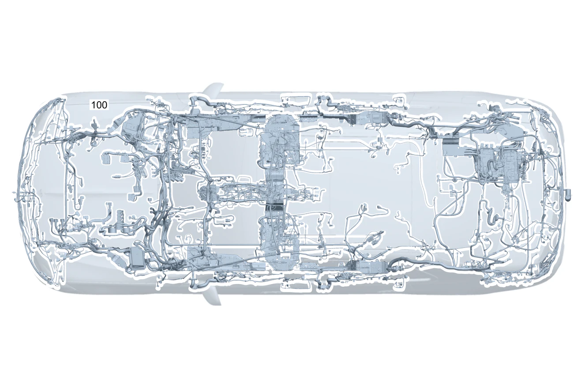

| № | Артикул | Название | Кол. | Примечание | Ограничение |
|---|---|---|---|---|---|
| 100 | A 205 540 23 12 | Электрический жгут (ELECTRICAL WIRING HARNESS) | 1 | Основной жгут электропроводки системы рамы и пола [001660] В ЖГУТЕ ЭЛЕКТРОПРОВОДКИ ИМЕЮТСЯ СООТВЕТСТВ. СПЕЦ.ИСПОЛНЕНИЯ СОГЛАСНО ЗАВОДСКОМУ НОМЕРУ АВТОМОБИЛЯ [622] ПРИ ЗАКАЗЕ УКАЗАТЬ ИДЕНТ.№ | 700 |
| 100 | A 205 540 21 12 | Электрический жгут (ELECTRICAL WIRING HARNESS) | 1 | Основной жгут электропроводки системы рамы и пола [001660] В ЖГУТЕ ЭЛЕКТРОПРОВОДКИ ИМЕЮТСЯ СООТВЕТСТВ. СПЕЦ.ИСПОЛНЕНИЯ СОГЛАСНО ЗАВОДСКОМУ НОМЕРУ АВТОМОБИЛЯ [622] ПРИ ЗАКАЗЕ УКАЗАТЬ ИДЕНТ.№ | |
| 120 | Q 000000000002 | - Возможен заказ только отдельных компонентов жгута проводов | 1 | ESP®, базовый объем Рулевое управление: Влево | 807+057/808 |
| 120 | Q 000000000002 | - Возможен заказ только отдельных компонентов жгута проводов | 1 | ESP®, базовый объем Рулевое управление: Влево | |
| 120 | Q 000000000002 | - Возможен заказ только отдельных компонентов жгута проводов | 1 | Электронная система стабилизации движения (ESP®) Рулевое управление: Влево | |
| 120 | Q 000000000002 | - Возможен заказ только отдельных компонентов жгута проводов | 1 | Электронная система стабилизации движения (ESP®) Рулевое управление: Влево | 807+057/808 |
| 120 | Q 000000000002 | - Возможен заказ только отдельных компонентов жгута проводов | 1 | Электронная система стабилизации движения (ESP®) Рулевое управление: Влево | |
| 120 | Q 000000000002 | - Возможен заказ только отдельных компонентов жгута проводов | 1 | Блок управления ESP® Рулевое управление: Влево | |
| 120 | Q 000000000002 | - Возможен заказ только отдельных компонентов жгута проводов | 1 | Блок управления ESP® Рулевое управление: Влево | 809 |
| 120 | Q 000000000002 | - Возможен заказ только отдельных компонентов жгута проводов | 1 | Блок управления ESP® Рулевое управление: Влево | |
| 120 | Q 000000000002 | - Возможен заказ только отдельных компонентов жгута проводов | 1 | Пневмоподвеска Рулевое управление: Влево | 489 |
| 120 | Q 000000000002 | - Возможен заказ только отдельных компонентов жгута проводов | 1 | Пневмоподвеска Рулевое управление: Влево | 807+489 |
| 120 | Q 000000000002 | - Возможен заказ только отдельных компонентов жгута проводов | 1 | Пневмоподвеска Рулевое управление: Влево | 489 |
| 120 | Q 000000000002 | - Возможен заказ только отдельных компонентов жгута проводов | 1 | Пневмоподвеска Рулевое управление: Влево | (807+057/808)+489 |
| 120 | Q 000000000002 | - Возможен заказ только отдельных компонентов жгута проводов | 1 | Пневмоподвеска Рулевое управление: Влево | 489 |
| 120 | Q 000000000002 | - Возможен заказ только отдельных компонентов жгута проводов | 1 | Аварийный натяжитель ремня безопасности, PRE\-SAFE® Рулевое управление: Влево | |
| 120 | Q 000000000002 | - Возможен заказ только отдельных компонентов жгута проводов | 1 | Аварийный натяжитель ремня безопасности, PRE\-SAFE® Рулевое управление: Влево | |
| 120 | Q 000000000002 | - Возможен заказ только отдельных компонентов жгута проводов | 1 | Аварийный натяжитель ремня безопасности, PRE\-SAFE® Рулевое управление: Влево | 299 |
| 120 | Q 000000000002 | - Возможен заказ только отдельных компонентов жгута проводов | 1 | Аварийный натяжитель ремня безопасности, PRE\-SAFE® Рулевое управление: Влево | 299 |
| 120 | Q 000000000002 | - Возможен заказ только отдельных компонентов жгута проводов | 1 | Аварийный натяжитель ремня безопасности, PRE\-SAFE® Рулевое управление: Влево | (807+057/808)+299 |
| 120 | Q 000000000002 | - Возможен заказ только отдельных компонентов жгута проводов | 1 | Аварийный натяжитель ремня безопасности, PRE\-SAFE® Рулевое управление: Влево | 299 |
| 120 | Q 000000000002 | - Возможен заказ только отдельных компонентов жгута проводов | 1 | Аварийный натяжитель ремня безопасности, PRE\-SAFE® Рулевое управление: Влево | 809 |
| 120 | Q 000000000002 | - Возможен заказ только отдельных компонентов жгута проводов | 1 | Аварийный натяжитель ремня безопасности, PRE\-SAFE® Рулевое управление: Влево | |
| 120 | Q 000000000002 | - Возможен заказ только отдельных компонентов жгута проводов | 1 | Аварийный натяжитель ремня безопасности, PRE\-SAFE® Рулевое управление: Влево | 809+299 |
| 120 | Q 000000000002 | - Возможен заказ только отдельных компонентов жгута проводов | 1 | Аварийный натяжитель ремня безопасности, PRE\-SAFE® Рулевое управление: Влево | 299 |
| 120 | Q 000000000002 | - Возможен заказ только отдельных компонентов жгута проводов | 1 | Защита пешеходов Рулевое управление: Влево | 809+U60 |
| 120 | Q 000000000002 | - Возможен заказ только отдельных компонентов жгута проводов | 1 | Защита пешеходов Рулевое управление: Влево | U60 |
| 120 | Q 000000000002 | - Возможен заказ только отдельных компонентов жгута проводов | 1 | Дистанционное закрывание крышки багажника Рулевое управление: Влево | 881 |
| 120 | Q 000000000002 | - Возможен заказ только отдельных компонентов жгута проводов | 1 | Дистанционное закрывание крышки багажника Рулевое управление: Влево | (807+057/808)+881 |
| 120 | Q 000000000002 | - Возможен заказ только отдельных компонентов жгута проводов | 1 | Дистанционное закрывание крышки багажника Рулевое управление: Влево | 881 |
| 120 | Q 000000000002 | - Возможен заказ только отдельных компонентов жгута проводов | 1 | Дистанционное закрывание крышки багажника Рулевое управление: Влево | 809+881 |
| 120 | Q 000000000002 | - Возможен заказ только отдельных компонентов жгута проводов | 1 | Дистанционное закрывание крышки багажника Рулевое управление: Влево | 881 |
| 120 | Q 000000000002 | - Возможен заказ только отдельных компонентов жгута проводов | 1 | Система центральной блокировки замков Рулевое управление: Влево | |
| 120 | Q 000000000002 | - Возможен заказ только отдельных компонентов жгута проводов | 1 | Система контроля давления в шинах (RDK) Рулевое управление: Влево | 475 |
| 120 | Q 000000000002 | - Возможен заказ только отдельных компонентов жгута проводов | 1 | Система противоугонной сигнализации (EDW) Рулевое управление: Влево | 882 |
| 120 | Q 000000000002 | - Возможен заказ только отдельных компонентов жгута проводов | 1 | Система противоугонной сигнализации (EDW) Рулевое управление: Влево | (807/808)+882 |
| 120 | Q 000000000002 | - Возможен заказ только отдельных компонентов жгута проводов | 1 | Система противоугонной сигнализации (EDW) Рулевое управление: Влево | 807+882 |
| 120 | Q 000000000002 | - Возможен заказ только отдельных компонентов жгута проводов | 1 | Система противоугонной сигнализации (EDW) Рулевое управление: Влево | 882 |
| 120 | Q 000000000002 | - Возможен заказ только отдельных компонентов жгута проводов | 1 | Система противоугонной сигнализации (EDW) Рулевое управление: Влево | (807+057/808)+882 |
| 120 | Q 000000000002 | - Возможен заказ только отдельных компонентов жгута проводов | 1 | Система противоугонной сигнализации (EDW) Рулевое управление: Влево | 882 |
| 120 | Q 000000000002 | - Возможен заказ только отдельных компонентов жгута проводов | 1 | Система противоугонной сигнализации (EDW) Рулевое управление: Влево | 809+882 |
| 120 | Q 000000000002 | - Возможен заказ только отдельных компонентов жгута проводов | 1 | Система противоугонной сигнализации (EDW) Рулевое управление: Влево | 882 |
| 120 | Q 000000000002 | - Возможен заказ только отдельных компонентов жгута проводов | 1 | Салон, базовый объем Рулевое управление: Влево | 806+056 |
| 120 | Q 000000000002 | - Возможен заказ только отдельных компонентов жгута проводов | 1 | Салон, базовый объем Рулевое управление: Влево | |
| 120 | Q 000000000002 | - Возможен заказ только отдельных компонентов жгута проводов | 1 | Салон, базовый объем Рулевое управление: Влево | 700+061 |
| 120 | Q 000000000002 | - Возможен заказ только отдельных компонентов жгута проводов | 1 | Заслонка в выпускном тракте Рулевое управление: Влево | M177+M40 |
| 120 | Q 000000000002 | - Возможен заказ только отдельных компонентов жгута проводов | 1 | Салон, базовый объем Рулевое управление: Влево | 806+056 |
| 120 | Q 000000000002 | - Возможен заказ только отдельных компонентов жгута проводов | 1 | Салон, базовый объем Рулевое управление: Влево | |
| 120 | Q 000000000002 | - Возможен заказ только отдельных компонентов жгута проводов | 1 | Салон, базовый объем Рулевое управление: Влево | 700+061 |
| 120 | Q 000000000002 | - Возможен заказ только отдельных компонентов жгута проводов | 1 | Салон, базовый объем Рулевое управление: Влево | 807 |
| 120 | Q 000000000002 | - Возможен заказ только отдельных компонентов жгута проводов | 1 | Салон, базовый объем Рулевое управление: Влево | |
| 120 | Q 000000000002 | - Возможен заказ только отдельных компонентов жгута проводов | 1 | Салон, базовый объем Рулевое управление: Влево | 807+057/808 |
| 120 | Q 000000000002 | - Возможен заказ только отдельных компонентов жгута проводов | 1 | Салон, базовый объем Рулевое управление: Влево | |
| 120 | Q 000000000002 | - Возможен заказ только отдельных компонентов жгута проводов | 1 | Салон, базовый объем Рулевое управление: Влево | 809 |
| 120 | Q 000000000002 | - Возможен заказ только отдельных компонентов жгута проводов | 1 | Салон, базовый объем Рулевое управление: Влево | |
| 120 | Q 000000000002 | - Возможен заказ только отдельных компонентов жгута проводов | 1 | Салон, базовый объем Рулевое управление: Влево | (800+050)/801 |
| 120 | Q 000000000002 | - Возможен заказ только отдельных компонентов жгута проводов | 1 | Салон, базовый объем Рулевое управление: Влево | |
| 120 | Q 000000000002 | - Возможен заказ только отдельных компонентов жгута проводов | 1 | Прикуриватель | 809 |
| 120 | Q 000000000002 | - Возможен заказ только отдельных компонентов жгута проводов | 1 | Прикуриватель | |
| 120 | Q 000000000002 | - Возможен заказ только отдельных компонентов жгута проводов | 1 | Электрическое штекерное соединение переднего моста, левый распределитель | |
| 120 | Q 000000000002 | - Возможен заказ только отдельных компонентов жгута проводов | 1 | Электрическое штекерное соединение переднего моста, левый распределитель | M005+M651 |
| 120 | Q 000000000002 | - Возможен заказ только отдельных компонентов жгута проводов | 1 | Электрическое штекерное соединение переднего моста, левый распределитель | 640/641/642/488/459/489 |
| 120 | Q 000000000002 | - Возможен заказ только отдельных компонентов жгута проводов | 1 | Электрическое штекерное соединение переднего моста, правый распределитель | |
| 120 | Q 000000000002 | - Возможен заказ только отдельных компонентов жгута проводов | 1 | Электрическое штекерное соединение переднего моста, правый распределитель | M005+M651 |
| 120 | Q 000000000002 | - Возможен заказ только отдельных компонентов жгута проводов | 1 | Электрическое штекерное соединение переднего моста, правый распределитель | 488/459/489 |
| 120 | Q 000000000002 | - Возможен заказ только отдельных компонентов жгута проводов | 1 | Электрическое штекерное соединение переднего моста, правый распределитель | M005+M651+(488/489/492) |
| 120 | Q 000000000002 | - Возможен заказ только отдельных компонентов жгута проводов | 1 | Датчик АКБ Рулевое управление: Влево | |
| 120 | Q 000000000002 | - Возможен заказ только отдельных компонентов жгута проводов | 1 | Датчик АКБ Рулевое управление: Влево | 807 |
| 120 | Q 000000000002 | - Возможен заказ только отдельных компонентов жгута проводов | 1 | Датчик АКБ Рулевое управление: Влево | |
| 120 | Q 000000000002 | - Возможен заказ только отдельных компонентов жгута проводов | 1 | Прикуриватель с подсветкой пепельницы спереди Рулевое управление: Влево | 809 |
| 120 | Q 000000000002 | - Возможен заказ только отдельных компонентов жгута проводов | 1 | Прикуриватель с подсветкой пепельницы спереди Рулевое управление: Влево | |
| 120 | Q 000000000002 | - Возможен заказ только отдельных компонентов жгута проводов | 1 | Прикуриватель с подсветкой пепельницы спереди Рулевое управление: Влево | 809+700+830+(U67/301) |
| 120 | Q 000000000002 | - Возможен заказ только отдельных компонентов жгута проводов | 1 | Прикуриватель с подсветкой пепельницы спереди Рулевое управление: Влево | 809+700+830 |
| 120 | Q 000000000002 | - Возможен заказ только отдельных компонентов жгута проводов | 1 | Прикуриватель с подсветкой пепельницы спереди Рулевое управление: Влево | 700+830 |
| 120 | Q 000000000002 | - Возможен заказ только отдельных компонентов жгута проводов | 1 | Прикуриватель с подсветкой пепельницы спереди Рулевое управление: Влево | 809+830+876 |
| 120 | Q 000000000002 | - Возможен заказ только отдельных компонентов жгута проводов | 1 | Прикуриватель с подсветкой пепельницы спереди Рулевое управление: Влево | 809+700+830+876+(U67/301) |
| 120 | Q 000000000002 | - Возможен заказ только отдельных компонентов жгута проводов | 1 | Прикуриватель с подсветкой пепельницы спереди Рулевое управление: Влево | 809+700+830+876 |
| 120 | Q 000000000002 | - Возможен заказ только отдельных компонентов жгута проводов | 1 | Прикуриватель с подсветкой пепельницы спереди Рулевое управление: Влево | 700+830+876 |
| 120 | Q 000000000002 | - Возможен заказ только отдельных компонентов жгута проводов | 1 | Разъём USB в центральной консоли Рулевое управление: Влево | 809+700+830+(U67/301)+(896/897/899) |
| 120 | Q 000000000002 | - Возможен заказ только отдельных компонентов жгута проводов | 1 | Разъём USB в центральной консоли Рулевое управление: Влево | 809+700+830+(896/897/899) |
| 120 | Q 000000000002 | - Возможен заказ только отдельных компонентов жгута проводов | 1 | Разъём USB в центральной консоли Рулевое управление: Влево | 700+830+(896/897/899) |
| 120 | Q 000000000002 | - Возможен заказ только отдельных компонентов жгута проводов | 1 | Разъём USB в центральной консоли Рулевое управление: Влево | 700+830+(897/899) |
| 120 | Q 000000000002 | - Возможен заказ только отдельных компонентов жгута проводов | 1 | Разъём USB в центральной консоли Рулевое управление: Влево | 809+876+830+(896/897/899) |
| 120 | Q 000000000002 | - Возможен заказ только отдельных компонентов жгута проводов | 1 | Разъём USB в центральной консоли Рулевое управление: Влево | 809+700+830+876+(U67/301)+(896/897/899) |
| 120 | Q 000000000002 | - Возможен заказ только отдельных компонентов жгута проводов | 1 | Разъём USB в центральной консоли Рулевое управление: Влево | 809+700+830+876+(896/897/899) |
| 120 | Q 000000000002 | - Возможен заказ только отдельных компонентов жгута проводов | 1 | Разъём USB в центральной консоли Рулевое управление: Влево | 700+830+876+(896/897/899) |
| 120 | Q 000000000002 | - Возможен заказ только отдельных компонентов жгута проводов | 1 | Разъём USB в центральной консоли Рулевое управление: Влево | 700+830+876+(897/899) |
| 120 | Q 000000000002 | - Возможен заказ только отдельных компонентов жгута проводов | 1 | Беспроводная зарядка телефона в передней части салона Рулевое управление: Влево | 809+(897/899) |
| 120 | Q 000000000002 | - Возможен заказ только отдельных компонентов жгута проводов | 1 | Беспроводная зарядка телефона в передней части салона Рулевое управление: Влево | 809+(897/899) |
| 120 | Q 000000000002 | - Возможен заказ только отдельных компонентов жгута проводов | 1 | Беспроводная зарядка телефона в передней части салона Рулевое управление: Влево | 897/899 |
| 120 | Q 000000000002 | - Возможен заказ только отдельных компонентов жгута проводов | 1 | Беспроводная зарядка телефона в передней части салона Рулевое управление: Влево | 800+(897/899) |
| 120 | Q 000000000002 | - Возможен заказ только отдельных компонентов жгута проводов | 1 | Беспроводная зарядка телефона в передней части салона Рулевое управление: Влево | 897/899 |
| 120 | Q 000000000002 | - Возможен заказ только отдельных компонентов жгута проводов | 1 | Прикуриватель с подсветкой пепельницы спереди Рулевое управление: Влево | 806+056+700+830 |
| 120 | Q 000000000002 | - Возможен заказ только отдельных компонентов жгута проводов | 1 | Прикуриватель с подсветкой пепельницы спереди Рулевое управление: Влево | 700+830 |
| 120 | Q 000000000002 | - Возможен заказ только отдельных компонентов жгута проводов | 1 | Прикуриватель с подсветкой пепельницы спереди Рулевое управление: Влево | 806+056+700+830+(U67/301) |
| 120 | Q 000000000002 | - Возможен заказ только отдельных компонентов жгута проводов | 1 | Прикуриватель с подсветкой пепельницы спереди Рулевое управление: Влево | 700+830+(U67/301) |
| 120 | Q 000000000002 | - Возможен заказ только отдельных компонентов жгута проводов | 1 | Прикуриватель с подсветкой пепельницы спереди Рулевое управление: Влево | 806+056+700+830+876 |
| 120 | Q 000000000002 | - Возможен заказ только отдельных компонентов жгута проводов | 1 | Прикуриватель с подсветкой пепельницы спереди Рулевое управление: Влево | 700+830+876 |
| 120 | Q 000000000002 | - Возможен заказ только отдельных компонентов жгута проводов | 1 | Прикуриватель с подсветкой пепельницы спереди Рулевое управление: Влево | 806+056+700+830+876+(U67/301) |
| 120 | Q 000000000002 | - Возможен заказ только отдельных компонентов жгута проводов | 1 | Прикуриватель с подсветкой пепельницы спереди Рулевое управление: Влево | 700+830+876+(U67/301) |
| 120 | Q 000000000002 | - Возможен заказ только отдельных компонентов жгута проводов | 1 | Прикуриватель с подсветкой пепельницы спереди Рулевое управление: Влево | 806+056+700+830+876+877+(U67/301) |
| 120 | Q 000000000002 | - Возможен заказ только отдельных компонентов жгута проводов | 1 | Прикуриватель с подсветкой пепельницы спереди Рулевое управление: Влево | 700+830+876+877+(U67/301) |
| 120 | Q 000000000002 | - Возможен заказ только отдельных компонентов жгута проводов | 1 | Проем для погрузки Рулевое управление: Влево | 287 |
| 120 | Q 000000000002 | - Возможен заказ только отдельных компонентов жгута проводов | 1 | Проем для погрузки Рулевое управление: Влево | 807+287 |
| 120 | Q 000000000002 | - Возможен заказ только отдельных компонентов жгута проводов | 1 | Проем для погрузки Рулевое управление: Влево | 287 |
| 120 | Q 000000000002 | - Возможен заказ только отдельных компонентов жгута проводов | 1 | Проем для погрузки Рулевое управление: Влево | (807+057/808)+287 |
| 120 | Q 000000000002 | - Возможен заказ только отдельных компонентов жгута проводов | 1 | Проем для погрузки Рулевое управление: Влево | 287 |
| 120 | Q 000000000002 | - Возможен заказ только отдельных компонентов жгута проводов | 1 | Проем для погрузки Рулевое управление: Влево | 809+287 |
| 120 | Q 000000000002 | - Возможен заказ только отдельных компонентов жгута проводов | 1 | Проем для погрузки Рулевое управление: Влево | 287 |
| 120 | Q 000000000002 | - Возможен заказ только отдельных компонентов жгута проводов | 1 | Выключатель замка ремня безопасности слева Рулевое управление: Влево | |
| 120 | Q 000000000002 | - Возможен заказ только отдельных компонентов жгута проводов | 1 | Выключатель замка ремня безопасности слева Рулевое управление: Влево | 221/275 |
| 120 | Q 000000000002 | - Возможен заказ только отдельных компонентов жгута проводов | 1 | Выключатель замка ремня безопасности справа Рулевое управление: Влево | |
| 120 | Q 000000000002 | - Возможен заказ только отдельных компонентов жгута проводов | 1 | Выключатель замка ремня безопасности справа Рулевое управление: Влево | 222/242 |
| 120 | Q 000000000002 | - Возможен заказ только отдельных компонентов жгута проводов | 1 | Оконная подушка безопасности Рулевое управление: Влево | |
| 120 | Q 000000000002 | - Возможен заказ только отдельных компонентов жгута проводов | 1 | Оконная подушка безопасности Рулевое управление: Влево | |
| 120 | Q 000000000002 | - Возможен заказ только отдельных компонентов жгута проводов | 1 | Оконная подушка безопасности Рулевое управление: Влево | 807+057/808 |
| 120 | Q 000000000002 | - Возможен заказ только отдельных компонентов жгута проводов | 1 | Оконная подушка безопасности Рулевое управление: Влево | |
| 120 | Q 000000000002 | - Возможен заказ только отдельных компонентов жгута проводов | 1 | Оконная подушка безопасности Рулевое управление: Влево | 809 |
| 120 | Q 000000000002 | - Возможен заказ только отдельных компонентов жгута проводов | 1 | Оконная подушка безопасности Рулевое управление: Влево | |
| 120 | Q 000000000002 | - Возможен заказ только отдельных компонентов жгута проводов | 1 | Выключатель замка ремня безопасности слева Рулевое управление: Влево | 809 |
| 120 | Q 000000000002 | - Возможен заказ только отдельных компонентов жгута проводов | 1 | Выключатель замка ремня безопасности слева Рулевое управление: Влево | |
| 120 | Q 000000000002 | - Возможен заказ только отдельных компонентов жгута проводов | 1 | Выключатель замка ремня безопасности слева Рулевое управление: Влево | 809+(275/221) |
| 120 | Q 000000000002 | - Возможен заказ только отдельных компонентов жгута проводов | 1 | Выключатель замка ремня безопасности слева Рулевое управление: Влево | 809+(275/221) |
| 120 | Q 000000000002 | - Возможен заказ только отдельных компонентов жгута проводов | 1 | Выключатель замка ремня безопасности слева Рулевое управление: Влево | 275/221 |
| 120 | Q 000000000002 | - Возможен заказ только отдельных компонентов жгута проводов | 1 | Выключатель замка ремня безопасности справа Рулевое управление: Влево | 809 |
| 120 | Q 000000000002 | - Возможен заказ только отдельных компонентов жгута проводов | 1 | Выключатель замка ремня безопасности справа Рулевое управление: Влево | |
| 120 | Q 000000000002 | - Возможен заказ только отдельных компонентов жгута проводов | 1 | Выключатель замка ремня безопасности справа Рулевое управление: Влево | 809+(242/222/455) |
| 120 | Q 000000000002 | - Возможен заказ только отдельных компонентов жгута проводов | 1 | Выключатель замка ремня безопасности справа Рулевое управление: Влево | 809+(242/222/455) |
| 120 | Q 000000000002 | - Возможен заказ только отдельных компонентов жгута проводов | 1 | Выключатель замка ремня безопасности справа Рулевое управление: Влево | 242/222/455 |
| 120 | Q 000000000002 | - Возможен заказ только отдельных компонентов жгута проводов | 1 | Фронтальный датчик ускорения спереди Рулевое управление: Влево | |
| 120 | Q 000000000002 | - Возможен заказ только отдельных компонентов жгута проводов | 1 | Фронтальный датчик ускорения спереди Рулевое управление: Влево | 809 |
| 120 | Q 000000000002 | - Возможен заказ только отдельных компонентов жгута проводов | 1 | Фронтальный датчик ускорения спереди Рулевое управление: Влево | |
| 120 | Q 000000000002 | - Возможен заказ только отдельных компонентов жгута проводов | 1 | Боковая подушка безопасности (задняя) | 809+293+700 |
| 120 | Q 000000000002 | - Возможен заказ только отдельных компонентов жгута проводов | 1 | Боковая подушка безопасности (задняя) | 293+700 |
| 120 | Q 000000000002 | - Возможен заказ только отдельных компонентов жгута проводов | 1 | Связь с сиденьем LIN Рулевое управление: Влево | 873/401/221/222 |
| 120 | Q 000000000002 | - Возможен заказ только отдельных компонентов жгута проводов | 1 | Связь с сиденьем LIN Рулевое управление: Влево | 809+(873/401/221/222) |
| 120 | Q 000000000002 | - Возможен заказ только отдельных компонентов жгута проводов | 1 | Связь с сиденьем LIN Рулевое управление: Влево | 275+(873/401/221/222) |
| 120 | Q 000000000002 | - Возможен заказ только отдельных компонентов жгута проводов | 1 | Связь с сиденьем LIN Рулевое управление: Влево | 809+275+(873/401/221/222) |
| 120 | Q 000000000002 | - Возможен заказ только отдельных компонентов жгута проводов | 1 | Связь с сиденьем LIN Рулевое управление: Влево | 809+(873/401) |
| 120 | Q 000000000002 | - Возможен заказ только отдельных компонентов жгута проводов | 1 | Связь с сиденьем LIN Рулевое управление: Влево | 873/401 |
| 120 | Q 000000000002 | - Возможен заказ только отдельных компонентов жгута проводов | 1 | Связь с сиденьем LIN Рулевое управление: Влево | 809+872 |
| 120 | Q 000000000002 | - Возможен заказ только отдельных компонентов жгута проводов | 1 | Связь с сиденьем LIN Рулевое управление: Влево | 872 |
| 120 | Q 000000000002 | - Возможен заказ только отдельных компонентов жгута проводов | 1 | Штекерное соединение распределителя потенциалов шины данных CAN периферийного оборудования Рулевое управление: Влево | |
| 120 | Q 000000000002 | - Возможен заказ только отдельных компонентов жгута проводов | 1 | Штекерное соединение распределителя потенциалов шины данных CAN периферийного оборудования Рулевое управление: Влево | 807 |
| 120 | Q 000000000002 | - Возможен заказ только отдельных компонентов жгута проводов | 1 | Штекерное соединение распределителя потенциалов шины данных CAN периферийного оборудования Рулевое управление: Влево | |
| 120 | Q 000000000002 | - Возможен заказ только отдельных компонентов жгута проводов | 1 | Штекерное соединение распределителя потенциалов шины данных CAN периферийного оборудования Рулевое управление: Влево | 807+057 |
| 120 | Q 000000000002 | - Возможен заказ только отдельных компонентов жгута проводов | 1 | Штекерное соединение распределителя потенциалов шины данных CAN периферийного оборудования Рулевое управление: Влево | |
| 120 | Q 000000000002 | - Возможен заказ только отдельных компонентов жгута проводов | 1 | Корпус кузова, шина данных CAN | 241/242/247/275/455/889/893/01T/U02 |
| 120 | Q 000000000002 | - Возможен заказ только отдельных компонентов жгута проводов | 1 | Корпус кузова, шина данных CAN | 808+(241/242/247/275/455/889/893/965/Z90/Z97/01T) |
| 120 | Q 000000000002 | - Возможен заказ только отдельных компонентов жгута проводов | 1 | Корпус кузова, шина данных CAN | (241/242/247/275/455/889/893/965/Z90/Z97/01T) |
| 120 | Q 000000000002 | - Возможен заказ только отдельных компонентов жгута проводов | 1 | Корпус кузова, шина данных CAN | 809+(221/222/241/242/275/409/455/B01/890/881) |
| 120 | Q 000000000002 | - Возможен заказ только отдельных компонентов жгута проводов | 1 | Корпус кузова, шина данных CAN | 221/222/241/242/275/409/455/B01/890/881 |
| 120 | Q 000000000002 | - Возможен заказ только отдельных компонентов жгута проводов | 1 | Корпус кузова, шина данных CAN | 809+409+(221/241/275)+(222/242/455)+B01+(890/881) |
| 120 | Q 000000000002 | - Возможен заказ только отдельных компонентов жгута проводов | 1 | Корпус кузова, шина данных CAN | 409+(221/241/275)+(222/242/455)+B01+(890/881) |
| 120 | Q 000000000002 | - Возможен заказ только отдельных компонентов жгута проводов | 1 | Корпус кузова, шина данных CAN | 809+(01T/965/Z90/Z97) |
| 120 | Q 000000000002 | - Возможен заказ только отдельных компонентов жгута проводов | 1 | Корпус кузова, шина данных CAN | 01T/Z90 |
| 120 | Q 000000000002 | - Возможен заказ только отдельных компонентов жгута проводов | 1 | Шина данных CAN трансмиссии | 808 |
| 120 | Q 000000000002 | - Возможен заказ только отдельных компонентов жгута проводов | 1 | Шина данных CAN трансмиссии | |
| 120 | Q 000000000002 | - Возможен заказ только отдельных компонентов жгута проводов | 1 | Шина данных CAN трансмиссии | 808+(M177/M276+M016) |
| 120 | Q 000000000002 | - Возможен заказ только отдельных компонентов жгута проводов | 1 | Шина данных CAN трансмиссии | M177/M276+M016 |
| 120 | Q 000000000002 | - Возможен заказ только отдельных компонентов жгута проводов | 1 | Шина данных CAN трансмиссии | 809 |
| 120 | Q 000000000002 | - Возможен заказ только отдельных компонентов жгута проводов | 1 | Шина данных CAN трансмиссии | |
| 120 | Q 000000000002 | - Возможен заказ только отдельных компонентов жгута проводов | 1 | Шина данных CAN трансмиссии | 809+(M177/M276+M016)/809+(M177/M276+M016)+01T |
| 120 | Q 000000000002 | - Возможен заказ только отдельных компонентов жгута проводов | 1 | Штекерное соединение распределителя потенциалов шины данных CAN периферийного оборудования Рулевое управление: Влево | 808 |
| 120 | Q 000000000002 | - Возможен заказ только отдельных компонентов жгута проводов | 1 | Штекерное соединение распределителя потенциалов шины данных CAN периферийного оборудования Рулевое управление: Влево | |
| 120 | Q 000000000002 | - Возможен заказ только отдельных компонентов жгута проводов | 1 | Штекерное соединение распределителя потенциалов шины данных CAN периферийного оборудования Рулевое управление: Влево | 808+((632/640/642)+((237+238+253)/234/476)+258+(476/513/608/628)/01T) |
| 120 | Q 000000000002 | - Возможен заказ только отдельных компонентов жгута проводов | 1 | Штекерное соединение распределителя потенциалов шины данных CAN периферийного оборудования Рулевое управление: Влево | ((632/640/642)+((237+238+253)/234/476)+258+(476/513/608/628)/01T) |
| 120 | Q 000000000002 | - Возможен заказ только отдельных компонентов жгута проводов | 1 | Штекерное соединение распределителя потенциалов шины данных CAN периферийного оборудования Рулевое управление: Влево | 808+(M177/M276+M016) |
| 120 | Q 000000000002 | - Возможен заказ только отдельных компонентов жгута проводов | 1 | Штекерное соединение распределителя потенциалов шины данных CAN периферийного оборудования Рулевое управление: Влево | M177/M276+M016 |
| 120 | Q 000000000002 | - Возможен заказ только отдельных компонентов жгута проводов | 1 | Система распознавания занятости сиденья, система распознавания наличия детского сиденья Рулевое управление: Влево | |
| 120 | Q 000000000002 | - Возможен заказ только отдельных компонентов жгута проводов | 1 | Система распознавания занятости сиденья, система распознавания наличия детского сиденья Рулевое управление: Влево | 222/242 |
| 120 | Q 000000000002 | - Возможен заказ только отдельных компонентов жгута проводов | 1 | Система распознавания занятости сиденья, система распознавания наличия детского сиденья Рулевое управление: Влево | 809 |
| 120 | Q 000000000002 | - Возможен заказ только отдельных компонентов жгута проводов | 1 | Система распознавания занятости сиденья, система распознавания наличия детского сиденья Рулевое управление: Влево | 809 |
| 120 | Q 000000000002 | - Возможен заказ только отдельных компонентов жгута проводов | 1 | Система распознавания занятости сиденья, система распознавания наличия детского сиденья Рулевое управление: Влево | |
| 120 | Q 000000000002 | - Возможен заказ только отдельных компонентов жгута проводов | 1 | Система распознавания занятости сиденья, система распознавания наличия детского сиденья Рулевое управление: Влево | 809+(222/242) |
| 120 | Q 000000000002 | - Возможен заказ только отдельных компонентов жгута проводов | 1 | Система распознавания занятости сиденья, система распознавания наличия детского сиденья Рулевое управление: Влево | 809+(222/242) |
| 120 | Q 000000000002 | - Возможен заказ только отдельных компонентов жгута проводов | 1 | Система распознавания занятости сиденья, система распознавания наличия детского сиденья Рулевое управление: Влево | (222/242) |
| 120 | Q 000000000002 | - Возможен заказ только отдельных компонентов жгута проводов | 1 | Система распознавания занятости сиденья, система распознавания наличия детского сиденья Рулевое управление: Влево | 809+U10+(222/242/455) |
| 120 | Q 000000000002 | - Возможен заказ только отдельных компонентов жгута проводов | 1 | Система распознавания занятости сиденья, система распознавания наличия детского сиденья Рулевое управление: Влево | 809+U10+(222/242/455) |
| 120 | Q 000000000002 | - Возможен заказ только отдельных компонентов жгута проводов | 1 | Система распознавания занятости сиденья, система распознавания наличия детского сиденья Рулевое управление: Влево | U10+(222/242/455) |
| 120 | Q 000000000002 | - Возможен заказ только отдельных компонентов жгута проводов | 1 | Связь по шине данных LIN HERMES Рулевое управление: Влево | 360/362 |
| 120 | Q 000000000002 | - Возможен заказ только отдельных компонентов жгута проводов | 1 | Связь по шине данных LIN HERMES | 809+(360/362) |
| 120 | Q 000000000002 | - Возможен заказ только отдельных компонентов жгута проводов | 1 | Связь по шине данных LIN HERMES | 362 |
| 120 | Q 000000000002 | - Возможен заказ только отдельных компонентов жгута проводов | 1 | Связь по шине данных LIN HERMES Рулевое управление: Влево | 809+(360/362)+U10+(222/242) |
| 120 | Q 000000000002 | - Возможен заказ только отдельных компонентов жгута проводов | 1 | Связь по шине данных LIN HERMES Рулевое управление: Влево | 809+(360/362)+U10+(222/242) |
| 120 | Q 000000000002 | - Возможен заказ только отдельных компонентов жгута проводов | 1 | Связь по шине данных LIN HERMES Рулевое управление: Влево | 362+U10+(222/242) |
| 120 | Q 000000000002 | - Возможен заказ только отдельных компонентов жгута проводов | 1 | Связь с сиденьем LIN Рулевое управление: Влево | 809+U10+(222/242) |
| 120 | Q 000000000002 | - Возможен заказ только отдельных компонентов жгута проводов | 1 | Связь с сиденьем LIN Рулевое управление: Влево | 809+U10+(222/242) |
| 120 | Q 000000000002 | - Возможен заказ только отдельных компонентов жгута проводов | 1 | Связь с сиденьем LIN Рулевое управление: Влево | U10+(222/242) |
| 120 | Q 000000000002 | - Возможен заказ только отдельных компонентов жгута проводов | 1 | Блок задних фонарей Рулевое управление: Влево | |
| 120 | Q 000000000002 | - Возможен заказ только отдельных компонентов жгута проводов | 1 | Блок задних фонарей Рулевое управление: Влево | 632/642 |
| 120 | Q 000000000002 | - Возможен заказ только отдельных компонентов жгута проводов | 1 | Блок задних фонарей Рулевое управление: Влево | 807+057/808 |
| 120 | Q 000000000002 | - Возможен заказ только отдельных компонентов жгута проводов | 1 | Блок задних фонарей Рулевое управление: Влево | |
| 120 | Q 000000000002 | - Возможен заказ только отдельных компонентов жгута проводов | 1 | Блок задних фонарей Рулевое управление: Влево | (807+057/808)+(632/642) |
| 120 | Q 000000000002 | - Возможен заказ только отдельных компонентов жгута проводов | 1 | Блок задних фонарей Рулевое управление: Влево | 632/642 |
| 120 | Q 000000000002 | - Возможен заказ только отдельных компонентов жгута проводов | 1 | Блок задних фонарей Рулевое управление: Влево | 809 |
| 120 | Q 000000000002 | - Возможен заказ только отдельных компонентов жгута проводов | 1 | Блок задних фонарей Рулевое управление: Влево | |
| 120 | Q 000000000002 | - Возможен заказ только отдельных компонентов жгута проводов | 1 | Блок задних фонарей Рулевое управление: Влево | 809+(632/642) |
| 120 | Q 000000000002 | - Возможен заказ только отдельных компонентов жгута проводов | 1 | Блок задних фонарей Рулевое управление: Влево | 632/642 |
| 120 | Q 000000000002 | - Возможен заказ только отдельных компонентов жгута проводов | 1 | Блок задних фонарей Рулевое управление: Влево | (800+050)/801 |
| 120 | Q 000000000002 | - Возможен заказ только отдельных компонентов жгута проводов | 1 | Блок задних фонарей Рулевое управление: Влево | |
| 120 | Q 000000000002 | - Возможен заказ только отдельных компонентов жгута проводов | 1 | Блок задних фонарей Рулевое управление: Влево | ((800+050)/801)+(632/642) |
| 120 | Q 000000000002 | - Возможен заказ только отдельных компонентов жгута проводов | 1 | Блок задних фонарей Рулевое управление: Влево | (632/642) |
| 120 | Q 000000000002 | - Возможен заказ только отдельных компонентов жгута проводов | 1 | Светодиодная подсветка центральной консоли спереди Рулевое управление: Влево | 876 |
| 120 | Q 000000000002 | - Возможен заказ только отдельных компонентов жгута проводов | 1 | Светодиодная подсветка центральной консоли спереди Рулевое управление: Влево | 876+877+(421/427) |
| 120 | Q 000000000002 | - Возможен заказ только отдельных компонентов жгута проводов | 1 | Светодиодная подсветка центральной консоли спереди Рулевое управление: Влево | (805+055+140/806)+876+877+(421/427) |
| 120 | Q 000000000002 | - Возможен заказ только отдельных компонентов жгута проводов | 1 | Светодиодная подсветка центральной консоли спереди Рулевое управление: Влево | 876+877+(421/427) |
| 120 | Q 000000000002 | - Возможен заказ только отдельных компонентов жгута проводов | 1 | Светодиодная подсветка центральной консоли спереди Рулевое управление: Влево | 806+876+700+830 |
| 120 | Q 000000000002 | - Возможен заказ только отдельных компонентов жгута проводов | 1 | Светодиодная подсветка центральной консоли спереди Рулевое управление: Влево | 876+700+830 |
| 120 | Q 000000000002 | - Возможен заказ только отдельных компонентов жгута проводов | 1 | Светодиодная подсветка центральной консоли спереди Рулевое управление: Влево | (807+057/808)+876+877+(421/427) |
| 120 | Q 000000000002 | - Возможен заказ только отдельных компонентов жгута проводов | 1 | Светодиодная подсветка центральной консоли спереди Рулевое управление: Влево | 876+877+(421/427) |
| 120 | Q 000000000002 | - Возможен заказ только отдельных компонентов жгута проводов | 1 | Светодиодная подсветка центральной консоли спереди Рулевое управление: Влево | 806+876+877+700+830 |
| 120 | Q 000000000002 | - Возможен заказ только отдельных компонентов жгута проводов | 1 | Светодиодная подсветка центральной консоли спереди Рулевое управление: Влево | 806+876+877+(421/427)+700+830 |
| 120 | Q 000000000002 | - Возможен заказ только отдельных компонентов жгута проводов | 1 | Светодиодная подсветка центральной консоли спереди Рулевое управление: Влево | 876+877+(421/427)+700+830 |
| 120 | Q 000000000002 | - Возможен заказ только отдельных компонентов жгута проводов | 1 | Светодиодная подсветка центральной консоли спереди Рулевое управление: Влево | 809+876+877 |
| 120 | Q 000000000002 | - Возможен заказ только отдельных компонентов жгута проводов | 1 | Светодиодная подсветка центральной консоли спереди Рулевое управление: Влево | 876+877 |
| 120 | Q 000000000002 | - Возможен заказ только отдельных компонентов жгута проводов | 1 | Светодиодная подсветка центральной консоли спереди Рулевое управление: Влево | (806+056/807)+876+877+(421/427)+700+830 |
| 120 | Q 000000000002 | - Возможен заказ только отдельных компонентов жгута проводов | 1 | Светодиодная подсветка центральной консоли спереди Рулевое управление: Влево | 876+877+(421/427)+700+830 |
| 120 | Q 000000000002 | - Возможен заказ только отдельных компонентов жгута проводов | 1 | Светодиодная подсветка пространства для ног Рулевое управление: Влево | 877+(221/275)+(222/242)+809 |
| 120 | Q 000000000002 | - Возможен заказ только отдельных компонентов жгута проводов | 1 | Светодиодная подсветка пространства для ног Рулевое управление: Влево | 877+(221/275)+(222/242) |
| 120 | Q 000000000002 | - Возможен заказ только отдельных компонентов жгута проводов | 1 | Освещение левого пространства для ног Рулевое управление: Влево | 876 |
| 120 | Q 000000000002 | - Возможен заказ только отдельных компонентов жгута проводов | 1 | Освещение левого пространства для ног Рулевое управление: Влево | 876+(221/275) |
| 120 | Q 000000000002 | - Возможен заказ только отдельных компонентов жгута проводов | 1 | Освещение левого пространства для ног Рулевое управление: Влево | 877+876+(221/275) |
| 120 | Q 000000000002 | - Возможен заказ только отдельных компонентов жгута проводов | 1 | Освещение левого пространства для ног Рулевое управление: Влево | (805+055+140/806)+877+876+(221/275) |
| 120 | Q 000000000002 | - Возможен заказ только отдельных компонентов жгута проводов | 1 | Освещение левого пространства для ног Рулевое управление: Влево | 877+876+(221/275) |
| 120 | Q 000000000002 | - Возможен заказ только отдельных компонентов жгута проводов | 1 | Освещение левого пространства для ног Рулевое управление: Влево | 806+876+(221/275)+700+830 |
| 120 | Q 000000000002 | - Возможен заказ только отдельных компонентов жгута проводов | 1 | Освещение левого пространства для ног Рулевое управление: Влево | 876+(221/275)+700+830 |
| 120 | Q 000000000002 | - Возможен заказ только отдельных компонентов жгута проводов | 1 | Освещение левого пространства для ног Рулевое управление: Влево | 806+876+877+(221/275)+700+830 |
| 120 | Q 000000000002 | - Возможен заказ только отдельных компонентов жгута проводов | 1 | Освещение левого пространства для ног Рулевое управление: Влево | 876+877+(221/275)+700+830 |
| 120 | Q 000000000002 | - Возможен заказ только отдельных компонентов жгута проводов | 1 | Освещение левого пространства для ног Рулевое управление: Влево | (807+057/808)+877+876 |
| 120 | Q 000000000002 | - Возможен заказ только отдельных компонентов жгута проводов | 1 | Освещение левого пространства для ног Рулевое управление: Влево | 877+876 |
| 120 | Q 000000000002 | - Возможен заказ только отдельных компонентов жгута проводов | 1 | Освещение левого пространства для ног Рулевое управление: Влево | (807+057/808)+877+876+(221/275) |
| 120 | Q 000000000002 | - Возможен заказ только отдельных компонентов жгута проводов | 1 | Освещение левого пространства для ног Рулевое управление: Влево | 877+876+(221/275) |
| 120 | Q 000000000002 | - Возможен заказ только отдельных компонентов жгута проводов | 1 | Освещение правого пространства для ног Рулевое управление: Влево | 876 |
| 120 | Q 000000000002 | - Возможен заказ только отдельных компонентов жгута проводов | 1 | Освещение правого пространства для ног Рулевое управление: Влево | 876+(222/242) |
| 120 | Q 000000000002 | - Возможен заказ только отдельных компонентов жгута проводов | 1 | Освещение правого пространства для ног Рулевое управление: Влево | 877+876+(222/242) |
| 120 | Q 000000000002 | - Возможен заказ только отдельных компонентов жгута проводов | 1 | Освещение правого пространства для ног Рулевое управление: Влево | (805+055+140/806)+877+876 |
| 120 | Q 000000000002 | - Возможен заказ только отдельных компонентов жгута проводов | 1 | Освещение правого пространства для ног Рулевое управление: Влево | 877+876 |
| 120 | Q 000000000002 | - Возможен заказ только отдельных компонентов жгута проводов | 1 | Освещение правого пространства для ног Рулевое управление: Влево | (805+055+140/806)+877+876+(222/242) |
| 120 | Q 000000000002 | - Возможен заказ только отдельных компонентов жгута проводов | 1 | Освещение правого пространства для ног Рулевое управление: Влево | 877+876+(222/242) |
| 120 | Q 000000000002 | - Возможен заказ только отдельных компонентов жгута проводов | 1 | Освещение правого пространства для ног Рулевое управление: Влево | 806+876+222+700+830 |
| 120 | Q 000000000002 | - Возможен заказ только отдельных компонентов жгута проводов | 1 | Освещение правого пространства для ног Рулевое управление: Влево | 876+222+700+830 |
| 120 | Q 000000000002 | - Возможен заказ только отдельных компонентов жгута проводов | 1 | Освещение правого пространства для ног Рулевое управление: Влево | 806+876+877+222+700+830 |
| 120 | Q 000000000002 | - Возможен заказ только отдельных компонентов жгута проводов | 1 | Освещение правого пространства для ног Рулевое управление: Влево | 876+877+222+700+830 |
| 120 | Q 000000000002 | - Возможен заказ только отдельных компонентов жгута проводов | 1 | Освещение правого пространства для ног Рулевое управление: Влево | (807+057/808)+877+876 |
| 120 | Q 000000000002 | - Возможен заказ только отдельных компонентов жгута проводов | 1 | Освещение правого пространства для ног Рулевое управление: Влево | 877+876 |
| 120 | Q 000000000002 | - Возможен заказ только отдельных компонентов жгута проводов | 1 | Освещение правого пространства для ног Рулевое управление: Влево | (807+057/808)+877+876+(222/242) |
| 120 | Q 000000000002 | - Возможен заказ только отдельных компонентов жгута проводов | 1 | Освещение правого пространства для ног Рулевое управление: Влево | 877+876+(222/242) |
| 120 | Q 000000000002 | - Возможен заказ только отдельных компонентов жгута проводов | 1 | Плафон освещения пространства для ног водителя и переднего пассажира Рулевое управление: Влево | 806+056+876+700+830 |
| 120 | Q 000000000002 | - Возможен заказ только отдельных компонентов жгута проводов | 1 | Плафон освещения пространства для ног водителя и переднего пассажира Рулевое управление: Влево | 876+700+830 |
| 120 | Q 000000000002 | - Возможен заказ только отдельных компонентов жгута проводов | 1 | Плафон освещения пространства для ног водителя и переднего пассажира Рулевое управление: Влево | (807+057/808)+876+700+830 |
| 120 | Q 000000000002 | - Возможен заказ только отдельных компонентов жгута проводов | 1 | Плафон освещения пространства для ног водителя и переднего пассажира Рулевое управление: Влево | 876+700+830 |
| 120 | Q 000000000002 | - Возможен заказ только отдельных компонентов жгута проводов | 1 | Плафон освещения пространства для ног водителя и переднего пассажира Рулевое управление: Влево | 809+876+700+830 |
| 120 | Q 000000000002 | - Возможен заказ только отдельных компонентов жгута проводов | 1 | Плафон освещения пространства для ног водителя и переднего пассажира Рулевое управление: Влево | 876+700+830 |
| 120 | Q 000000000002 | - Возможен заказ только отдельных компонентов жгута проводов | 1 | Плафон освещения пространства для ног (левый) Рулевое управление: Влево | 806+056+876+877+(221/275)+700+830 |
| 120 | Q 000000000002 | - Возможен заказ только отдельных компонентов жгута проводов | 1 | Плафон освещения пространства для ног (левый) Рулевое управление: Влево | 876+877+(221/275)+700+830 |
| 120 | Q 000000000002 | - Возможен заказ только отдельных компонентов жгута проводов | 1 | Плафон освещения пространства для ног (правый) Рулевое управление: Влево | 806+056+876+877+222+700+830 |
| 120 | Q 000000000002 | - Возможен заказ только отдельных компонентов жгута проводов | 1 | Плафон освещения пространства для ног (правый) Рулевое управление: Влево | 876+877+222+700+830 |
| 120 | Q 000000000002 | - Возможен заказ только отдельных компонентов жгута проводов | 1 | Накладка порога с подсветкой (передняя) Рулевое управление: Влево | U25 |
| 120 | Q 000000000002 | - Возможен заказ только отдельных компонентов жгута проводов | 1 | Накладка порога с подсветкой (передняя) Рулевое управление: Влево | (807+057/808)+U25 |
| 120 | Q 000000000002 | - Возможен заказ только отдельных компонентов жгута проводов | 1 | Накладка порога с подсветкой (передняя) Рулевое управление: Влево | U25 |
| 120 | Q 000000000002 | - Возможен заказ только отдельных компонентов жгута проводов | 1 | Накладка порога с подсветкой (передняя) Рулевое управление: Влево | 809+U25 |
| 120 | Q 000000000002 | - Возможен заказ только отдельных компонентов жгута проводов | 1 | Накладка порога с подсветкой (передняя) Рулевое управление: Влево | U25 |
| 120 | Q 000000000002 | - Возможен заказ только отдельных компонентов жгута проводов | 1 | Накладка порога с подсветкой (задняя) Рулевое управление: Влево | U25 |
| 120 | Q 000000000002 | - Возможен заказ только отдельных компонентов жгута проводов | 1 | Накладка порога с подсветкой (задняя) Рулевое управление: Влево | (807+057/808)+U25 |
| 120 | Q 000000000002 | - Возможен заказ только отдельных компонентов жгута проводов | 1 | Накладка порога с подсветкой (задняя) Рулевое управление: Влево | U25 |
| 120 | Q 000000000002 | - Возможен заказ только отдельных компонентов жгута проводов | 1 | Накладка порога с подсветкой (задняя) Рулевое управление: Влево | 809+U25 |
| 120 | Q 000000000002 | - Возможен заказ только отдельных компонентов жгута проводов | 1 | Накладка порога с подсветкой (задняя) Рулевое управление: Влево | U25 |
| 120 | Q 000000000002 | - Возможен заказ только отдельных компонентов жгута проводов | 1 | Датчик дождя и освещенности с дополнительными функциями Рулевое управление: Влево | 700 |
| 120 | Q 000000000002 | - Возможен заказ только отдельных компонентов жгута проводов | 1 | Датчик дождя и освещенности с дополнительными функциями Рулевое управление: Влево | 700+(628/476/513/628+(476/513)) |
| 120 | Q 000000000002 | - Возможен заказ только отдельных компонентов жгута проводов | 1 | Датчик дождя и освещенности с дополнительными функциями Рулевое управление: Влево | 807+700 |
| 120 | Q 000000000002 | - Возможен заказ только отдельных компонентов жгута проводов | 1 | Датчик дождя и освещенности с дополнительными функциями Рулевое управление: Влево | 700 |
| 120 | Q 000000000002 | - Возможен заказ только отдельных компонентов жгута проводов | 1 | Датчик дождя и освещенности с дополнительными функциями Рулевое управление: Влево | 807+700+(628/476/513/628+(476/513)) |
| 120 | Q 000000000002 | - Возможен заказ только отдельных компонентов жгута проводов | 1 | Датчик дождя и освещенности с дополнительными функциями Рулевое управление: Влево | 700+(628/476/513/628+(476/513)) |
| 120 | Q 000000000002 | - Возможен заказ только отдельных компонентов жгута проводов | 1 | Датчик дождя и освещенности с дополнительными функциями Рулевое управление: Влево | 807+700+463/700+463+(628/476/513/628+(476/513)) |
| 120 | Q 000000000002 | - Возможен заказ только отдельных компонентов жгута проводов | 1 | Датчик дождя и освещенности с дополнительными функциями Рулевое управление: Влево | 807+(700+463/700+463+(628/476/513/628+(476/513))) |
| 120 | Q 000000000002 | - Возможен заказ только отдельных компонентов жгута проводов | 1 | Датчик дождя и освещенности с дополнительными функциями Рулевое управление: Влево | 006 |
| 120 | Q 000000000002 | - Возможен заказ только отдельных компонентов жгута проводов | 1 | Датчик дождя и освещенности с дополнительными функциями Рулевое управление: Влево | 807+006 |
| 120 | Q 000000000002 | - Возможен заказ только отдельных компонентов жгута проводов | 1 | Датчик дождя и освещенности с дополнительными функциями Рулевое управление: Влево | 006 |
| 120 | Q 000000000002 | - Возможен заказ только отдельных компонентов жгута проводов | 1 | Датчик дождя и освещенности с дополнительными функциями Рулевое управление: Влево | (807+057/808)+700 |
| 120 | Q 000000000002 | - Возможен заказ только отдельных компонентов жгута проводов | 1 | Датчик дождя и освещенности с дополнительными функциями Рулевое управление: Влево | 700 |
| 120 | Q 000000000002 | - Возможен заказ только отдельных компонентов жгута проводов | 1 | Датчик дождя и освещенности с дополнительными функциями Рулевое управление: Влево | (807+057/808)+700+(628/476/513/628+(476/513)) |
| 120 | Q 000000000002 | - Возможен заказ только отдельных компонентов жгута проводов | 1 | Датчик дождя и освещенности с дополнительными функциями Рулевое управление: Влево | 700+(628/476/513/628+(476/513)) |
| 120 | Q 000000000002 | - Возможен заказ только отдельных компонентов жгута проводов | 1 | Датчик дождя и освещенности с дополнительными функциями Рулевое управление: Влево | 807+057+700+463/700+463+(628/476/513/628+(476/513)) |
| 120 | Q 000000000002 | - Возможен заказ только отдельных компонентов жгута проводов | 1 | Датчик дождя и освещенности с дополнительными функциями Рулевое управление: Влево | (807+057/808)+(700+463/700+463+(628/476/513/628+(476/513))) |
| 120 | Q 000000000002 | - Возможен заказ только отдельных компонентов жгута проводов | 1 | Датчик дождя и освещенности с дополнительными функциями Рулевое управление: Влево | (700+463/700+463+(628/476/513/628+(476/513))) |
| 120 | Q 000000000002 | - Возможен заказ только отдельных компонентов жгута проводов | 1 | Датчик дождя и освещенности с дополнительными функциями Рулевое управление: Влево | (807+057/808)+006 |
| 120 | Q 000000000002 | - Возможен заказ только отдельных компонентов жгута проводов | 1 | Датчик дождя и освещенности с дополнительными функциями Рулевое управление: Влево | 006 |
| 120 | Q 000000000002 | - Возможен заказ только отдельных компонентов жгута проводов | 1 | Датчик дождя и освещенности с дополнительными функциями Рулевое управление: Влево | 809+700+(233/463) |
| 120 | Q 000000000002 | - Возможен заказ только отдельных компонентов жгута проводов | 1 | Датчик дождя и освещенности с дополнительными функциями Рулевое управление: Влево | 700+(233/463) |
| 120 | Q 000000000002 | - Возможен заказ только отдельных компонентов жгута проводов | 1 | Реле | |
| 120 | Q 000000000002 | - Возможен заказ только отдельных компонентов жгута проводов | 1 | Реле | 809 |
| 120 | Q 000000000002 | - Возможен заказ только отдельных компонентов жгута проводов | 1 | Реле | |
| 120 | Q 000000000002 | - Возможен заказ только отдельных компонентов жгута проводов | 1 | Провод электропитания блока предохранителей | 807 |
| 120 | Q 000000000002 | - Возможен заказ только отдельных компонентов жгута проводов | 1 | Провод электропитания блока предохранителей | |
| 120 | Q 000000000002 | - Возможен заказ только отдельных компонентов жгута проводов | 1 | Провод электропитания блока предохранителей | 809 |
| 120 | Q 000000000002 | - Возможен заказ только отдельных компонентов жгута проводов | 1 | Провод электропитания блока предохранителей | |
| 120 | Q 000000000002 | - Возможен заказ только отдельных компонентов жгута проводов | 1 | Провод электропитания блока предохранителей | 809+U67 |
| 120 | Q 000000000002 | - Возможен заказ только отдельных компонентов жгута проводов | 1 | Провод электропитания блока предохранителей | U67 |
| 120 | Q 000000000002 | - Возможен заказ только отдельных компонентов жгута проводов | 1 | Розетка (230 В) | U67 |
| 120 | Q 000000000002 | - Возможен заказ только отдельных компонентов жгута проводов | 1 | Розетка (230 В) | (807+057/808)+U67 |
| 120 | Q 000000000002 | - Возможен заказ только отдельных компонентов жгута проводов | 1 | Розетка (230 В) | U67 |
| 120 | Q 000000000002 | - Возможен заказ только отдельных компонентов жгута проводов | 1 | Сдвижной люк, электрический Рулевое управление: Влево | 414 |
| 120 | Q 000000000002 | - Возможен заказ только отдельных компонентов жгута проводов | 1 | Панорамная крыша Рулевое управление: Влево | 413 |
| 120 | Q 000000000002 | - Возможен заказ только отдельных компонентов жгута проводов | 1 | Сдвижной люк, электрический Рулевое управление: Влево | (807+057/808)+414 |
| 120 | Q 000000000002 | - Возможен заказ только отдельных компонентов жгута проводов | 1 | Сдвижной люк, электрический Рулевое управление: Влево | 414 |
| 120 | Q 000000000002 | - Возможен заказ только отдельных компонентов жгута проводов | 1 | Панорамная крыша Рулевое управление: Влево | (807+057/808)+413 |
| 120 | Q 000000000002 | - Возможен заказ только отдельных компонентов жгута проводов | 1 | Панорамная крыша Рулевое управление: Влево | 413 |
| 120 | Q 000000000002 | - Возможен заказ только отдельных компонентов жгута проводов | 1 | Сдвижной люк, электрический Рулевое управление: Влево | 809+414 |
| 120 | Q 000000000002 | - Возможен заказ только отдельных компонентов жгута проводов | 1 | Сдвижной люк, электрический Рулевое управление: Влево | 414 |
| 120 | Q 000000000002 | - Возможен заказ только отдельных компонентов жгута проводов | 1 | Панорамная крыша Рулевое управление: Влево | 809+413 |
| 120 | Q 000000000002 | - Возможен заказ только отдельных компонентов жгута проводов | 1 | Панорамная крыша Рулевое управление: Влево | 413 |
| 120 | Q 000000000002 | - Возможен заказ только отдельных компонентов жгута проводов | 1 | Электропитание стартера Рулевое управление: Влево | |
| 120 | Q 000000000002 | - Возможен заказ только отдельных компонентов жгута проводов | 1 | Электропитание стартера Рулевое управление: Влево | 807+057/808 |
| 120 | Q 000000000002 | - Возможен заказ только отдельных компонентов жгута проводов | 1 | Электропитание стартера Рулевое управление: Влево | |
| 120 | Q 000000000002 | - Возможен заказ только отдельных компонентов жгута проводов | 1 | Электропитание стартера Рулевое управление: Влево | 809 |
| 120 | Q 000000000002 | - Возможен заказ только отдельных компонентов жгута проводов | 1 | Электропитание стартера Рулевое управление: Влево | |
| 120 | Q 000000000002 | - Возможен заказ только отдельных компонентов жгута проводов | 1 | Электропитание стартера Рулевое управление: Вправо | |
| 120 | Q 000000000002 | - Возможен заказ только отдельных компонентов жгута проводов | 1 | Комплект трубопроводов бензиновых а/м Рулевое управление: Влево | M274 |
| 120 | Q 000000000002 | - Возможен заказ только отдельных компонентов жгута проводов | 1 | Комплект трубопроводов бензиновых а/м Рулевое управление: Влево | 806+056+M274 |
| 120 | Q 000000000002 | - Возможен заказ только отдельных компонентов жгута проводов | 1 | Комплект трубопроводов бензиновых а/м Рулевое управление: Влево | M274 |
| 120 | Q 000000000002 | - Возможен заказ только отдельных компонентов жгута проводов | 1 | Комплект трубопроводов бензиновых а/м Рулевое управление: Влево | 807+M274 |
| 120 | Q 000000000002 | - Возможен заказ только отдельных компонентов жгута проводов | 1 | Комплект трубопроводов бензиновых а/м Рулевое управление: Влево | M274 |
| 120 | Q 000000000002 | - Возможен заказ только отдельных компонентов жгута проводов | 1 | Комплект трубопроводов бензиновых а/м Рулевое управление: Влево | 700+061+M274 |
| 120 | Q 000000000002 | - Возможен заказ только отдельных компонентов жгута проводов | 1 | Комплект трубопроводов бензиновых а/м Рулевое управление: Влево | (807+057/808)+M274 |
| 120 | Q 000000000002 | - Возможен заказ только отдельных компонентов жгута проводов | 1 | Комплект трубопроводов бензиновых а/м Рулевое управление: Влево | M274 |
| 120 | Q 000000000002 | - Возможен заказ только отдельных компонентов жгута проводов | 1 | Комплект трубопроводов бензиновых а/м Рулевое управление: Влево | 809+M274 |
| 120 | Q 000000000002 | - Возможен заказ только отдельных компонентов жгута проводов | 1 | Комплект трубопроводов бензиновых а/м Рулевое управление: Влево | M274 |
| 120 | Q 000000000002 | - Возможен заказ только отдельных компонентов жгута проводов | 1 | Комплект трубопроводов бензиновых а/м X18/35 Рулевое управление: Влево | M274 |
| 120 | Q 000000000002 | - Возможен заказ только отдельных компонентов жгута проводов | 1 | Комплект трубопроводов бензиновых а/м X18/35 Рулевое управление: Влево | 809+M274 |
| 120 | Q 000000000002 | - Возможен заказ только отдельных компонентов жгута проводов | 1 | Комплект трубопроводов бензиновых а/м X18/35 Рулевое управление: Влево | M274 |
| 120 | Q 000000000002 | - Возможен заказ только отдельных компонентов жгута проводов | 1 | Сажевый фильтр бензинового двигателя Рулевое управление: Влево | 809+M274+598 |
| 120 | Q 000000000002 | - Возможен заказ только отдельных компонентов жгута проводов | 1 | Сажевый фильтр бензинового двигателя Рулевое управление: Влево | M274+(598/961) |
| 120 | Q 000000000002 | - Возможен заказ только отдельных компонентов жгута проводов | 1 | Сажевый фильтр бензинового двигателя Рулевое управление: Влево | M274+961 |
| 120 | Q 000000000002 | - Возможен заказ только отдельных компонентов жгута проводов | 1 | Педаль газа Рулевое управление: Влево | M274+(421/427) |
| 120 | Q 000000000002 | - Возможен заказ только отдельных компонентов жгута проводов | 1 | Бортовая сеть 48 В: управление / электропитание Рулевое управление: Влево | B01+809 |
| 120 | Q 000000000002 | - Возможен заказ только отдельных компонентов жгута проводов | 1 | Бортовая сеть 48 В: управление / электропитание Рулевое управление: Влево | B01 |
| 120 | Q 000000000002 | - Возможен заказ только отдельных компонентов жгута проводов | 1 | Датчик давления топлива | 807+(M274/M276/M177) |
| 120 | Q 000000000002 | - Возможен заказ только отдельных компонентов жгута проводов | 1 | Датчик давления топлива | (M274/M276/M177) |
| 120 | Q 000000000002 | - Возможен заказ только отдельных компонентов жгута проводов | 1 | Датчик давления топлива Рулевое управление: Влево | 700+061+(M274/M276) |
| 120 | Q 000000000002 | - Возможен заказ только отдельных компонентов жгута проводов | 1 | Датчик давления топлива | 809+(M264/M274/M276/M177) |
| 120 | Q 000000000002 | - Возможен заказ только отдельных компонентов жгута проводов | 1 | Датчик давления топлива | M177/M264/M274/M276 |
| 120 | Q 000000000002 | - Возможен заказ только отдельных компонентов жгута проводов | 1 | Связь по шине данных LIN CEPC Рулевое управление: Влево | |
| 120 | Q 000000000002 | - Возможен заказ только отдельных компонентов жгута проводов | 1 | Связь по шине данных LIN CEPC Рулевое управление: Влево | 807 |
| 120 | Q 000000000002 | - Возможен заказ только отдельных компонентов жгута проводов | 1 | Связь по шине данных LIN CEPC Рулевое управление: Влево | |
| 120 | Q 000000000002 | - Возможен заказ только отдельных компонентов жгута проводов | 1 | Связь по шине данных LIN CEPC Рулевое управление: Влево | M274+(830+945/ME06+835)+808 |
| 120 | Q 000000000002 | - Возможен заказ только отдельных компонентов жгута проводов | 1 | Связь по шине данных LIN CEPC Рулевое управление: Влево | M274+(830+945/ME06+835) |
| 120 | Q 000000000002 | - Возможен заказ только отдельных компонентов жгута проводов | 1 | Базовый объем CEPC Рулевое управление: Влево | |
| 120 | Q 000000000002 | - Возможен заказ только отдельных компонентов жгута проводов | 1 | Базовый объем CEPC Рулевое управление: Влево | 807 |
| 120 | Q 000000000002 | - Возможен заказ только отдельных компонентов жгута проводов | 1 | Базовый объем CEPC Рулевое управление: Влево | |
| 120 | Q 000000000002 | - Возможен заказ только отдельных компонентов жгута проводов | 1 | Датчик температуры CEPC Рулевое управление: Влево | 809 |
| 120 | Q 000000000002 | - Возможен заказ только отдельных компонентов жгута проводов | 1 | Датчик температуры CEPC Рулевое управление: Влево | |
| 120 | Q 000000000002 | - Возможен заказ только отдельных компонентов жгута проводов | 1 | Датчик температуры охлаждающей жидкости бортовая сеть 48 В Рулевое управление: Влево | 809+B01 |
| 120 | Q 000000000002 | - Возможен заказ только отдельных компонентов жгута проводов | 1 | Датчик температуры охлаждающей жидкости бортовая сеть 48 В Рулевое управление: Влево | B01 |
| 120 | Q 000000000002 | - Возможен заказ только отдельных компонентов жгута проводов | 1 | Датчик температуры охлаждающей жидкости бортовая сеть 48 В Рулевое управление: Влево | (800+050/801)+B01 |
| 120 | Q 000000000002 | - Возможен заказ только отдельных компонентов жгута проводов | 1 | Датчик температуры охлаждающей жидкости бортовая сеть 48 В Рулевое управление: Влево | B01 |
| 120 | Q 000000000002 | - Возможен заказ только отдельных компонентов жгута проводов | 1 | Связь по шине данных LIN CEPC Рулевое управление: Влево | 809 |
| 120 | Q 000000000002 | - Возможен заказ только отдельных компонентов жгута проводов | 1 | Связь по шине данных LIN CEPC Рулевое управление: Влево | |
| 120 | Q 000000000002 | - Возможен заказ только отдельных компонентов жгута проводов | 1 | Связь по шине данных LIN CEPC Рулевое управление: Влево | 809+M274+(460/494) |
| 120 | Q 000000000002 | - Возможен заказ только отдельных компонентов жгута проводов | 1 | Связь по шине данных LIN CEPC Рулевое управление: Влево | M274+(460/494) |
| 120 | Q 000000000002 | - Возможен заказ только отдельных компонентов жгута проводов | 1 | Связь по шине данных LIN CEPC Рулевое управление: Влево | 809+M274+(830+945/ME05+835) |
| 120 | Q 000000000002 | - Возможен заказ только отдельных компонентов жгута проводов | 1 | Связь по шине данных LIN CEPC Рулевое управление: Влево | M274+(830+945/ME05+(835/B10)) |
| 120 | Q 000000000002 | - Возможен заказ только отдельных компонентов жгута проводов | 1 | Капот Рулевое управление: Влево | |
| 120 | Q 000000000002 | - Возможен заказ только отдельных компонентов жгута проводов | 1 | Капот Рулевое управление: Влево | 807 |
| 120 | Q 000000000002 | - Возможен заказ только отдельных компонентов жгута проводов | 1 | Капот Рулевое управление: Влево | |
| 120 | Q 000000000002 | - Возможен заказ только отдельных компонентов жгута проводов | 1 | Капот Рулевое управление: Влево | 807+057/808 |
| 120 | Q 000000000002 | - Возможен заказ только отдельных компонентов жгута проводов | 1 | Капот Рулевое управление: Влево | |
| 120 | Q 000000000002 | - Возможен заказ только отдельных компонентов жгута проводов | 1 | Топливный бак | M274/M276/M651 |
| 120 | Q 000000000002 | - Возможен заказ только отдельных компонентов жгута проводов | 1 | FlexRay ESP® Рулевое управление: Влево | |
| 120 | Q 000000000002 | - Возможен заказ только отдельных компонентов жгута проводов | 1 | FlexRay ESP® Рулевое управление: Влево | 235 |
| 120 | Q 000000000002 | - Возможен заказ только отдельных компонентов жгута проводов | 1 | FlexRay ESP® Рулевое управление: Влево | 233/239/489/488 |
| 120 | Q 000000000002 | - Возможен заказ только отдельных компонентов жгута проводов | 1 | FlexRay ESP® Рулевое управление: Влево | 235+(233/239/489/488) |
| 120 | Q 000000000002 | - Возможен заказ только отдельных компонентов жгута проводов | 1 | "Flexray" | 809+(459/489) |
| 120 | Q 000000000002 | - Возможен заказ только отдельных компонентов жгута проводов | 1 | "Flexray" | 459/489 |
| 120 | Q 000000000002 | - Возможен заказ только отдельных компонентов жгута проводов | 1 | "Flexray" Рулевое управление: Влево | 809+489+233 |
| 120 | Q 000000000002 | - Возможен заказ только отдельных компонентов жгута проводов | 1 | "Flexray" Рулевое управление: Влево | 489+233 |
| 120 | Q 000000000002 | - Возможен заказ только отдельных компонентов жгута проводов | 1 | "Flexray" Рулевое управление: Влево | 809+489+235 |
| 120 | Q 000000000002 | - Возможен заказ только отдельных компонентов жгута проводов | 1 | "Flexray" Рулевое управление: Влево | 489+235 |
| 120 | Q 000000000002 | - Возможен заказ только отдельных компонентов жгута проводов | 1 | "Flexray" Рулевое управление: Влево | 809+489+233+235 |
| 120 | Q 000000000002 | - Возможен заказ только отдельных компонентов жгута проводов | 1 | "Flexray" Рулевое управление: Влево | 489+233+235 |
| 120 | Q 000000000002 | - Возможен заказ только отдельных компонентов жгута проводов | 1 | "Flexray" Рулевое управление: Влево | 809+233 |
| 120 | Q 000000000002 | - Возможен заказ только отдельных компонентов жгута проводов | 1 | "Flexray" Рулевое управление: Влево | 233 |
| 120 | Q 000000000002 | - Возможен заказ только отдельных компонентов жгута проводов | 1 | "Flexray" Рулевое управление: Влево | 809+233+235 |
| 120 | Q 000000000002 | - Возможен заказ только отдельных компонентов жгута проводов | 1 | "Flexray" Рулевое управление: Влево | 233+235 |
| 120 | Q 000000000002 | - Возможен заказ только отдельных компонентов жгута проводов | 1 | "Flexray" Рулевое управление: Влево | 809+235 |
| 120 | Q 000000000002 | - Возможен заказ только отдельных компонентов жгута проводов | 1 | "Flexray" Рулевое управление: Влево | 235 |
| 120 | Q 000000000002 | - Возможен заказ только отдельных компонентов жгута проводов | 1 | "Flexray" | 809+488 |
| 120 | Q 000000000002 | - Возможен заказ только отдельных компонентов жгута проводов | 1 | "Flexray" | 488 |
| 120 | Q 000000000002 | - Возможен заказ только отдельных компонентов жгута проводов | 1 | "Flexray" Рулевое управление: Влево | 809+488+233 |
| 120 | Q 000000000002 | - Возможен заказ только отдельных компонентов жгута проводов | 1 | "Flexray" Рулевое управление: Влево | 488+233 |
| 120 | Q 000000000002 | - Возможен заказ только отдельных компонентов жгута проводов | 1 | "Flexray" Рулевое управление: Влево | 809+488+235 |
| 120 | Q 000000000002 | - Возможен заказ только отдельных компонентов жгута проводов | 1 | "Flexray" Рулевое управление: Влево | 488+235 |
| 120 | Q 000000000002 | - Возможен заказ только отдельных компонентов жгута проводов | 1 | "Flexray" Рулевое управление: Влево | 809+488+233+235 |
| 120 | Q 000000000002 | - Возможен заказ только отдельных компонентов жгута проводов | 1 | "Flexray" Рулевое управление: Влево | 488+233+235 |
| 120 | Q 000000000002 | - Возможен заказ только отдельных компонентов жгута проводов | 1 | FlexRay ESP® Рулевое управление: Влево | 809 |
| 120 | Q 000000000002 | - Возможен заказ только отдельных компонентов жгута проводов | 1 | FlexRay ESP® Рулевое управление: Влево | |
| 120 | Q 000000000002 | - Возможен заказ только отдельных компонентов жгута проводов | 1 | FlexRay ESP® Рулевое управление: Влево | 809+(233/235/239/266/459/489) |
| 120 | Q 000000000002 | - Возможен заказ только отдельных компонентов жгута проводов | 1 | FlexRay ESP® Рулевое управление: Влево | 233/235/239/266/459/489/488 |
| 120 | Q 000000000002 | - Возможен заказ только отдельных компонентов жгута проводов | 1 | Электронный замок зажигания | 809 |
| 120 | Q 000000000002 | - Возможен заказ только отдельных компонентов жгута проводов | 1 | Электронный замок зажигания | |
| 120 | Q 000000000002 | - Возможен заказ только отдельных компонентов жгута проводов | 1 | Электронный замок зажигания | 809+(235/239/459/489) |
| 120 | Q 000000000002 | - Возможен заказ только отдельных компонентов жгута проводов | 1 | Электронный замок зажигания | 235/239/459/489 |
| 120 | Q 000000000002 | - Возможен заказ только отдельных компонентов жгута проводов | 1 | Электронный замок зажигания | 809+(233/266/M177/M276+M016) |
| 120 | Q 000000000002 | - Возможен заказ только отдельных компонентов жгута проводов | 1 | Электронный замок зажигания | 233/266/M177/M276+M016 |
| 120 | Q 000000000002 | - Возможен заказ только отдельных компонентов жгута проводов | 1 | Электронный замок зажигания | 809+(233/266/M177/M276+M016)+(235/239/459/489) |
| 120 | Q 000000000002 | - Возможен заказ только отдельных компонентов жгута проводов | 1 | Электронный замок зажигания | (233/266/M177/M276+M016)+(235/239/459/489) |
| 120 | Q 000000000002 | - Возможен заказ только отдельных компонентов жгута проводов | 1 | Блок управления коробки передач Рулевое управление: Влево | 427+M005 |
| 120 | Q 000000000002 | - Возможен заказ только отдельных компонентов жгута проводов | 1 | Блок управления коробки передач Рулевое управление: Влево | 807+057+427+M005 |
| 120 | Q 000000000002 | - Возможен заказ только отдельных компонентов жгута проводов | 1 | Блок управления коробки передач Рулевое управление: Влево | 427+M005 |
| 120 | Q 000000000002 | - Возможен заказ только отдельных компонентов жгута проводов | 1 | Блок управления коробки передач Рулевое управление: Влево | 807+421+M005 |
| 120 | Q 000000000002 | - Возможен заказ только отдельных компонентов жгута проводов | 1 | Блок управления коробки передач Рулевое управление: Влево | 421+M005 |
| 120 | Q 000000000002 | - Возможен заказ только отдельных компонентов жгута проводов | 1 | Блок управления коробки передач Рулевое управление: Влево | (807+057/808)+421+M005 |
| 120 | Q 000000000002 | - Возможен заказ только отдельных компонентов жгута проводов | 1 | Блок управления коробки передач Рулевое управление: Влево | 421+M005 |
| 120 | Q 000000000002 | - Возможен заказ только отдельных компонентов жгута проводов | 1 | Диагностическая шина данных CAN Рулевое управление: Влево | 809 |
| 120 | Q 000000000002 | - Возможен заказ только отдельных компонентов жгута проводов | 1 | Диагностическая шина данных CAN Рулевое управление: Влево | |
| 120 | Q 000000000002 | - Возможен заказ только отдельных компонентов жгута проводов | 1 | Диагностическая шина данных CAN Рулевое управление: Влево | 809+(360/362/364) |
| 120 | Q 000000000002 | - Возможен заказ только отдельных компонентов жгута проводов | 1 | Диагностическая шина данных CAN Рулевое управление: Влево | 362/364 |
| 120 | Q 000000000002 | - Возможен заказ только отдельных компонентов жгута проводов | 1 | Диагностическая шина данных CAN Рулевое управление: Влево | 362 |
| 120 | Q 000000000002 | - Возможен заказ только отдельных компонентов жгута проводов | 1 | Базовый объём телекоммуникационного оборудования Рулевое управление: Влево | 805+055+140/806 |
| 120 | Q 000000000002 | - Возможен заказ только отдельных компонентов жгута проводов | 1 | Базовый объём телекоммуникационного оборудования Рулевое управление: Влево | |
| 120 | Q 000000000002 | - Возможен заказ только отдельных компонентов жгута проводов | 1 | Громкоговоритель Рулевое управление: Влево | |
| 120 | Q 000000000002 | - Возможен заказ только отдельных компонентов жгута проводов | 1 | Громкоговоритель Рулевое управление: Влево | 805+055+140/806 |
| 120 | Q 000000000002 | - Возможен заказ только отдельных компонентов жгута проводов | 1 | Громкоговоритель Рулевое управление: Влево | |
| 120 | Q 000000000002 | - Возможен заказ только отдельных компонентов жгута проводов | 1 | Громкоговоритель Рулевое управление: Влево | 809 |
| 120 | Q 000000000002 | - Возможен заказ только отдельных компонентов жгута проводов | 1 | Громкоговоритель Рулевое управление: Влево | |
| 120 | A 205 540 65 70 | - Электрический жгут | 1 | Громкоговоритель Рулевое управление: Влево | 809+810 |
| 120 | A 205 540 65 70 | - Электрический жгут | 1 | Громкоговоритель Рулевое управление: Влево | 810 |
| 120 | Q 000000000002 | - Возможен заказ только отдельных компонентов жгута проводов | 1 | Громкоговоритель Рулевое управление: Влево | 809+853 |
| 120 | Q 000000000002 | - Возможен заказ только отдельных компонентов жгута проводов | 1 | Громкоговоритель Рулевое управление: Влево | 853 |
| 120 | A 205 540 65 70 | - Электрический жгут | 1 | Громкоговоритель Рулевое управление: Влево | (809+M276+M016/809+B63)+810 |
| 120 | Q 000000000002 | - Возможен заказ только отдельных компонентов жгута проводов | 1 | Громкоговоритель Рулевое управление: Влево | 809+B63+853/M276+M016 |
| 120 | Q 000000000002 | - Возможен заказ только отдельных компонентов жгута проводов | 1 | Акустическая система Рулевое управление: Влево | 810 |
| 120 | Q 000000000002 | - Возможен заказ только отдельных компонентов жгута проводов | 1 | Акустическая система Рулевое управление: Влево | (807+057/808)+810 |
| 120 | Q 000000000002 | - Возможен заказ только отдельных компонентов жгута проводов | 1 | Акустическая система Рулевое управление: Влево | 810 |
| 120 | Q 000000000002 | - Возможен заказ только отдельных компонентов жгута проводов | 1 | Телефонная антенна Рулевое управление: Влево | 386 |
| 120 | Q 000000000002 | - Возможен заказ только отдельных компонентов жгута проводов | 1 | Телефонная антенна Рулевое управление: Влево | 807+386 |
| 120 | Q 000000000002 | - Возможен заказ только отдельных компонентов жгута проводов | 1 | Телефонная антенна Рулевое управление: Влево | 386/379 |
| 120 | Q 000000000002 | - Возможен заказ только отдельных компонентов жгута проводов | 1 | Телефонная антенна Рулевое управление: Влево | (807+057/808)+(386/379) |
| 120 | Q 000000000002 | - Возможен заказ только отдельных компонентов жгута проводов | 1 | Телефонная антенна Рулевое управление: Влево | 386/379 |
| 120 | Q 000000000002 | - Возможен заказ только отдельных компонентов жгута проводов | 1 | Блок управления системы экстренного вызова N2/10 To N123/4 Рулевое управление: Влево | 348 |
| 120 | Q 000000000002 | - Возможен заказ только отдельных компонентов жгута проводов | 1 | Блок управления системы экстренного вызова Рулевое управление: Влево | 348 |
| 120 | Q 000000000002 | - Возможен заказ только отдельных компонентов жгута проводов | 1 | Блок управления системы экстренного вызова Рулевое управление: Влево | 348+810 |
| 120 | Q 000000000002 | - Возможен заказ только отдельных компонентов жгута проводов | 1 | Антенна DAB / ТВ Рулевое управление: Влево | (807+057/808)+865 |
| 120 | Q 000000000002 | - Возможен заказ только отдельных компонентов жгута проводов | 1 | Антенна DAB / ТВ Рулевое управление: Влево | 865 |
| 120 | Q 000000000002 | - Возможен заказ только отдельных компонентов жгута проводов | 1 | Антенна DAB / ТВ Рулевое управление: Влево | 809+865 |
| 120 | Q 000000000002 | - Возможен заказ только отдельных компонентов жгута проводов | 1 | Антенна DAB / ТВ Рулевое управление: Влево | 865 |
| 120 | Q 000000000002 | - Возможен заказ только отдельных компонентов жгута проводов | 1 | USB, зарядная розетка Рулевое управление: Влево | (805+055+140/806)+830 |
| 120 | Q 000000000002 | - Возможен заказ только отдельных компонентов жгута проводов | 1 | USB, зарядная розетка Рулевое управление: Влево | 700 |
| 120 | Q 000000000002 | - Возможен заказ только отдельных компонентов жгута проводов | 1 | USB, зарядная розетка Рулевое управление: Влево | 807+057+830 |
| 120 | Q 000000000002 | - Возможен заказ только отдельных компонентов жгута проводов | 1 | USB, зарядная розетка Рулевое управление: Влево | 830 |
| 120 | Q 000000000002 | - Возможен заказ только отдельных компонентов жгута проводов | 1 | USB, зарядная розетка Рулевое управление: Влево | 809+830 |
| 120 | Q 000000000002 | - Возможен заказ только отдельных компонентов жгута проводов | 1 | USB, зарядная розетка Рулевое управление: Влево | 700 |
| 120 | Q 000000000002 | - Возможен заказ только отдельных компонентов жгута проводов | 1 | Основные параметры Hermes Рулевое управление: Влево | (807+057/808)+(360/362)+810 |
| 120 | Q 000000000002 | - Возможен заказ только отдельных компонентов жгута проводов | 1 | Основные параметры Hermes Рулевое управление: Влево | (360/362)+810 |
| 120 | Q 000000000002 | - Возможен заказ только отдельных компонентов жгута проводов | 1 | Телефонная антенна Рулевое управление: Влево | 809+(380/899)+503 |
| 120 | Q 000000000002 | - Возможен заказ только отдельных компонентов жгута проводов | 1 | Телефонная антенна Рулевое управление: Влево | 809+899+B24 |
| 120 | Q 000000000002 | - Возможен заказ только отдельных компонентов жгута проводов | 1 | Телефонная антенна Рулевое управление: Влево | 899+B24 |
| 120 | Q 000000000002 | - Возможен заказ только отдельных компонентов жгута проводов | 1 | Проектор для ветрового стекла Рулевое управление: Влево | 463 |
| 120 | Q 000000000002 | - Возможен заказ только отдельных компонентов жгута проводов | 1 | Проектор для ветрового стекла Рулевое управление: Влево | 809+463 |
| 120 | Q 000000000002 | - Возможен заказ только отдельных компонентов жгута проводов | 1 | Проектор для ветрового стекла Рулевое управление: Влево | 463 |
| 120 | Q 000000000002 | - Возможен заказ только отдельных компонентов жгута проводов | 1 | Мультимедийная система для задних пассажиров Рулевое управление: Влево | (807+057/808)+866 |
| 120 | Q 000000000002 | - Возможен заказ только отдельных компонентов жгута проводов | 1 | Мультимедийная система для задних пассажиров Рулевое управление: Влево | 866 |
| 120 | Q 000000000002 | - Возможен заказ только отдельных компонентов жгута проводов | 1 | Сигнал предупреждения о столкновении Рулевое управление: Влево | 258 |
| 120 | Q 000000000002 | - Возможен заказ только отдельных компонентов жгута проводов | 1 | Сигнал предупреждения о столкновении Рулевое управление: Влево | 807+258 |
| 120 | Q 000000000002 | - Возможен заказ только отдельных компонентов жгута проводов | 1 | Сигнал предупреждения о столкновении Рулевое управление: Влево | 258 |
| 120 | Q 000000000002 | - Возможен заказ только отдельных компонентов жгута проводов | 1 | Сигнал предупреждения о столкновении Рулевое управление: Влево | (807+057/808)+258 |
| 120 | Q 000000000002 | - Возможен заказ только отдельных компонентов жгута проводов | 1 | Сигнал предупреждения о столкновении Рулевое управление: Влево | 258 |
| 120 | Q 000000000002 | - Возможен заказ только отдельных компонентов жгута проводов | 1 | Сигнал предупреждения о столкновении Рулевое управление: Влево | 809+258 |
| 120 | Q 000000000002 | - Возможен заказ только отдельных компонентов жгута проводов | 1 | Сигнал предупреждения о столкновении Рулевое управление: Влево | 258 |
| 120 | Q 000000000002 | - Возможен заказ только отдельных компонентов жгута проводов | 1 | Сигнал предупреждения о столкновении Рулевое управление: Влево | 809+258+P23 |
| 120 | Q 000000000002 | - Возможен заказ только отдельных компонентов жгута проводов | 1 | Сигнал предупреждения о столкновении Рулевое управление: Влево | 258+P23 |
| 120 | Q 000000000002 | - Возможен заказ только отдельных компонентов жгута проводов | 1 | DISTRONIC PLUS Рулевое управление: Влево | 809+233 |
| 120 | Q 000000000002 | - Возможен заказ только отдельных компонентов жгута проводов | 1 | DISTRONIC PLUS Рулевое управление: Влево | 233 |
| 120 | Q 000000000002 | - Возможен заказ только отдельных компонентов жгута проводов | 1 | Адаптивный круиз\-контроль Plus Рулевое управление: Влево | 239 |
| 120 | Q 000000000002 | - Возможен заказ только отдельных компонентов жгута проводов | 1 | Адаптивный круиз\-контроль Plus Рулевое управление: Влево | 239 |
| 120 | Q 000000000002 | - Возможен заказ только отдельных компонентов жгута проводов | 1 | Адаптивный круиз\-контроль Plus Рулевое управление: Влево | 807+239 |
| 120 | Q 000000000002 | - Возможен заказ только отдельных компонентов жгута проводов | 1 | Адаптивный круиз\-контроль Plus Рулевое управление: Влево | 239 |
| 120 | Q 000000000002 | - Возможен заказ только отдельных компонентов жгута проводов | 1 | Адаптивный круиз\-контроль Plus Рулевое управление: Влево | (807+057/808)+239 |
| 120 | Q 000000000002 | - Возможен заказ только отдельных компонентов жгута проводов | 1 | Адаптивный круиз\-контроль Plus Рулевое управление: Влево | 239 |
| 120 | Q 000000000002 | - Возможен заказ только отдельных компонентов жгута проводов | 1 | Адаптивный круиз\-контроль Plus Рулевое управление: Влево | 809+239 |
| 120 | Q 000000000002 | - Возможен заказ только отдельных компонентов жгута проводов | 1 | Адаптивный круиз\-контроль Plus Рулевое управление: Влево | 239 |
| 120 | Q 000000000002 | - Возможен заказ только отдельных компонентов жгута проводов | 1 | Адаптивный круиз\-контроль Plus Рулевое управление: Влево | 809+239+P23 |
| 120 | Q 000000000002 | - Возможен заказ только отдельных компонентов жгута проводов | 1 | Адаптивный круиз\-контроль Plus Рулевое управление: Влево | 239+P23 |
| 120 | Q 000000000002 | - Возможен заказ только отдельных компонентов жгута проводов | 1 | Вспомогательные системы Рулевое управление: Влево | 237+238+253 |
| 120 | Q 000000000002 | - Возможен заказ только отдельных компонентов жгута проводов | 1 | Вспомогательные системы Рулевое управление: Влево | 234/476/234+476 |
| 120 | Q 000000000002 | - Возможен заказ только отдельных компонентов жгута проводов | 1 | Вспомогательные системы Рулевое управление: Влево | 807+237+238+253 |
| 120 | Q 000000000002 | - Возможен заказ только отдельных компонентов жгута проводов | 1 | Вспомогательные системы Рулевое управление: Влево | 237+238+253 |
| 120 | Q 000000000002 | - Возможен заказ только отдельных компонентов жгута проводов | 1 | Вспомогательные системы Рулевое управление: Влево | 807+(234/476/234+476) |
| 120 | Q 000000000002 | - Возможен заказ только отдельных компонентов жгута проводов | 1 | Вспомогательные системы Рулевое управление: Влево | (234/476/234+476) |
| 120 | Q 000000000002 | - Возможен заказ только отдельных компонентов жгута проводов | 1 | Вспомогательные системы Рулевое управление: Влево | (807+057/808)+237+238+253 |
| 120 | Q 000000000002 | - Возможен заказ только отдельных компонентов жгута проводов | 1 | Вспомогательные системы Рулевое управление: Влево | 237+238+253 |
| 120 | Q 000000000002 | - Возможен заказ только отдельных компонентов жгута проводов | 1 | Вспомогательные системы Рулевое управление: Влево | (807+057/808)+(234/476/234+476) |
| 120 | Q 000000000002 | - Возможен заказ только отдельных компонентов жгута проводов | 1 | Вспомогательные системы Рулевое управление: Влево | (234/476/234+476) |
| 120 | Q 000000000002 | - Возможен заказ только отдельных компонентов жгута проводов | 1 | Вспомогательные системы Рулевое управление: Влево | 809+(234/243/234+243) |
| 120 | Q 000000000002 | - Возможен заказ только отдельных компонентов жгута проводов | 1 | Вспомогательные системы Рулевое управление: Влево | (234/243/234+243) |
| 120 | Q 000000000002 | - Возможен заказ только отдельных компонентов жгута проводов | 1 | Активная система помощи при парковке Рулевое управление: Влево | 235+(489/488)/237/238/253/266/463/476/501 |
| 120 | Q 000000000002 | - Возможен заказ только отдельных компонентов жгута проводов | 1 | Система PARKTRONIC Рулевое управление: Влево | 235 |
| 120 | Q 000000000002 | - Возможен заказ только отдельных компонентов жгута проводов | 1 | Система PARKTRONIC Рулевое управление: Влево | 807+235 |
| 120 | Q 000000000002 | - Возможен заказ только отдельных компонентов жгута проводов | 1 | Система PARKTRONIC Рулевое управление: Влево | 235 |
| 120 | Q 000000000002 | - Возможен заказ только отдельных компонентов жгута проводов | 1 | Система PARKTRONIC Рулевое управление: Влево | (807+057/808)+235 |
| 120 | Q 000000000002 | - Возможен заказ только отдельных компонентов жгута проводов | 1 | Система PARKTRONIC Рулевое управление: Влево | 235 |
| 120 | Q 000000000002 | - Возможен заказ только отдельных компонентов жгута проводов | 1 | Система PARKTRONIC Рулевое управление: Влево | 809+235 |
| 120 | Q 000000000002 | - Возможен заказ только отдельных компонентов жгута проводов | 1 | Система PARKTRONIC Рулевое управление: Влево | 235 |
| 120 | Q 000000000002 | - Возможен заказ только отдельных компонентов жгута проводов | 1 | Система PARKTRONIC Рулевое управление: Влево | 800+235 |
| 120 | Q 000000000002 | - Возможен заказ только отдельных компонентов жгута проводов | 1 | Система PARKTRONIC Рулевое управление: Влево | 235 |
| 120 | Q 000000000002 | - Возможен заказ только отдельных компонентов жгута проводов | 1 | Многофункциональная камера МОНО Рулевое управление: Влево | (807+057/808)+(476/513/608/628) |
| 120 | Q 000000000002 | - Возможен заказ только отдельных компонентов жгута проводов | 1 | Многофункциональная камера МОНО Рулевое управление: Влево | 476/513/608/628 |
| 120 | Q 000000000002 | - Возможен заказ только отдельных компонентов жгута проводов | 1 | Многофункциональная камера МОНО Рулевое управление: Влево | (807+057/808)+(476/513/608/628)+(463/865) |
| 120 | Q 000000000002 | - Возможен заказ только отдельных компонентов жгута проводов | 1 | Многофункциональная камера МОНО Рулевое управление: Влево | (476/513/608/628)+(463/865) |
| 120 | Q 000000000002 | - Возможен заказ только отдельных компонентов жгута проводов | 1 | Многофункциональная камера СТЕРЕО Рулевое управление: Влево | (807+057/808)+(238/266/269/271) |
| 120 | Q 000000000002 | - Возможен заказ только отдельных компонентов жгута проводов | 1 | Многофункциональная камера СТЕРЕО Рулевое управление: Влево | 238/266/269/271 |
| 120 | Q 000000000002 | - Возможен заказ только отдельных компонентов жгута проводов | 1 | Многофункциональная камера СТЕРЕО Рулевое управление: Влево | 809+(233/266) |
| 120 | Q 000000000002 | - Возможен заказ только отдельных компонентов жгута проводов | 1 | Многофункциональная камера СТЕРЕО Рулевое управление: Влево | (233/266) |
| 120 | Q 000000000002 | - Возможен заказ только отдельных компонентов жгута проводов | 1 | Система регулирования уровня кузова на заднем мосту Рулевое управление: Влево | 632/642 |
| 120 | Q 000000000002 | - Возможен заказ только отдельных компонентов жгута проводов | 1 | Система регулирования уровня кузова на заднем мосту Рулевое управление: Влево | 809+(632/642) |
| 120 | Q 000000000002 | - Возможен заказ только отдельных компонентов жгута проводов | 1 | Система регулирования уровня кузова на заднем мосту Рулевое управление: Влево | (632/642) |
| 120 | Q 000000000002 | - Возможен заказ только отдельных компонентов жгута проводов | 1 | Шина данных CAN: фары Рулевое управление: Вправо | (631/632/641/642) |
| 120 | Q 000000000002 | - Возможен заказ только отдельных компонентов жгута проводов | 1 | Электрорегулировка сиденья с функцией памяти, слева Рулевое управление: Влево | 275 |
| 120 | Q 000000000002 | - Возможен заказ только отдельных компонентов жгута проводов | 1 | Электрорегулировка сиденья с функцией памяти, слева Рулевое управление: Влево | 221 |
| 120 | Q 000000000002 | - Возможен заказ только отдельных компонентов жгута проводов | 1 | Электрорегулировка сиденья с функцией памяти, слева Рулевое управление: Влево | 806+221 |
| 120 | Q 000000000002 | - Возможен заказ только отдельных компонентов жгута проводов | 1 | Электрорегулировка сиденья с функцией памяти, слева Рулевое управление: Влево | 805+055+140/806 |
| 120 | Q 000000000002 | - Возможен заказ только отдельных компонентов жгута проводов | 1 | Электрорегулировка сиденья с функцией памяти, слева Рулевое управление: Влево | |
| 120 | Q 000000000002 | - Возможен заказ только отдельных компонентов жгута проводов | 1 | Выбор настроек рулевого управления Рулевое управление: Влево | 275+(421/427) |
| 120 | Q 000000000002 | - Возможен заказ только отдельных компонентов жгута проводов | 1 | Выбор настроек рулевого управления Рулевое управление: Влево | 275+(421/427)+809 |
| 120 | Q 000000000002 | - Возможен заказ только отдельных компонентов жгута проводов | 1 | Выбор настроек рулевого управления Рулевое управление: Влево | 275+421 |
| 120 | Q 000000000002 | - Возможен заказ только отдельных компонентов жгута проводов | 1 | Электрорегулировка сиденья с функцией памяти, справа Рулевое управление: Влево | 222 |
| 120 | Q 000000000002 | - Возможен заказ только отдельных компонентов жгута проводов | 1 | Right front seat, lumbar support adjustment Рулевое управление: Влево | U22/555 |
| 120 | Q 000000000002 | - Возможен заказ только отдельных компонентов жгута проводов | 1 | Right front seat, lumbar support adjustment Рулевое управление: Влево | 807+U22 |
| 120 | Q 000000000002 | - Возможен заказ только отдельных компонентов жгута проводов | 1 | Right front seat, lumbar support adjustment Рулевое управление: Влево | U22 |
| 120 | Q 000000000002 | - Возможен заказ только отдельных компонентов жгута проводов | 1 | Right front seat, lumbar support adjustment Рулевое управление: Влево | (807+057/808)+U22 |
| 120 | Q 000000000002 | - Возможен заказ только отдельных компонентов жгута проводов | 1 | Right front seat, lumbar support adjustment Рулевое управление: Влево | U22 |
| 120 | Q 000000000002 | - Возможен заказ только отдельных компонентов жгута проводов | 1 | Left front seat, seat heating Рулевое управление: Влево | 873/401 |
| 120 | Q 000000000002 | - Возможен заказ только отдельных компонентов жгута проводов | 1 | Right front seat, seat heating Рулевое управление: Влево | 873/401 |
| 120 | Q 000000000002 | - Возможен заказ только отдельных компонентов жгута проводов | 1 | Подогрев передних сидений | 809+(401/873) |
| 120 | Q 000000000002 | - Возможен заказ только отдельных компонентов жгута проводов | 1 | Подогрев передних сидений | 401/873 |
| 120 | Q 000000000002 | - Возможен заказ только отдельных компонентов жгута проводов | 1 | Переднее сиденье с регулируемым климатом | (805+055+140/806)+401 |
| 120 | Q 000000000002 | - Возможен заказ только отдельных компонентов жгута проводов | 1 | Переднее сиденье с регулируемым климатом | 401 |
| 120 | Q 000000000002 | - Возможен заказ только отдельных компонентов жгута проводов | 1 | Переднее сиденье с регулируемым климатом | 809+401 |
| 120 | Q 000000000002 | - Возможен заказ только отдельных компонентов жгута проводов | 1 | Переднее сиденье с регулируемым климатом | 401 |
| 120 | Q 000000000002 | - Возможен заказ только отдельных компонентов жгута проводов | 1 | Блок управления подогрева сидений Рулевое управление: Влево | (807+057/808)+(873/401) |
| 120 | Q 000000000002 | - Возможен заказ только отдельных компонентов жгута проводов | 1 | Блок управления подогрева сидений Рулевое управление: Влево | 873/401 |
| 120 | Q 000000000002 | - Возможен заказ только отдельных компонентов жгута проводов | 1 | Блок управления подогрева сидений Рулевое управление: Влево | 809+(873/401) |
| 120 | Q 000000000002 | - Возможен заказ только отдельных компонентов жгута проводов | 1 | Блок управления подогрева сидений Рулевое управление: Влево | 873/401 |
| 120 | Q 000000000002 | - Возможен заказ только отдельных компонентов жгута проводов | 1 | Подогрев сидений в задней части салона, слева и справа Рулевое управление: Влево | 872 |
| 120 | Q 000000000002 | - Возможен заказ только отдельных компонентов жгута проводов | 1 | Подогрев сидений в задней части салона, слева и справа Рулевое управление: Влево | 807+872 |
| 120 | Q 000000000002 | - Возможен заказ только отдельных компонентов жгута проводов | 1 | Подогрев сидений в задней части салона, слева и справа Рулевое управление: Влево | (807+057/808)+872 |
| 120 | Q 000000000002 | - Возможен заказ только отдельных компонентов жгута проводов | 1 | Подогрев сидений в задней части салона, слева и справа Рулевое управление: Влево | 872 |
| 120 | Q 000000000002 | - Возможен заказ только отдельных компонентов жгута проводов | 1 | Подогрев сидений в задней части салона, слева и справа Рулевое управление: Влево | 809+872 |
| 120 | Q 000000000002 | - Возможен заказ только отдельных компонентов жгута проводов | 1 | Подогрев сидений в задней части салона, слева и справа Рулевое управление: Влево | 872 |
| 120 | Q 000000000002 | - Возможен заказ только отдельных компонентов жгута проводов | 1 | Подогрев сидений в задней части салона, слева и справа Рулевое управление: Влево | 872+800 |
| 120 | Q 000000000002 | - Возможен заказ только отдельных компонентов жгута проводов | 1 | Подогрев сидений в задней части салона, слева и справа Рулевое управление: Влево | 872 |
| 120 | Q 000000000002 | - Возможен заказ только отдельных компонентов жгута проводов | 1 | Шина данных CAN правого сиденья | 809+409 |
| 120 | Q 000000000002 | - Возможен заказ только отдельных компонентов жгута проводов | 1 | Шина данных CAN правого сиденья | 409 |
| 120 | Q 000000000002 | - Возможен заказ только отдельных компонентов жгута проводов | 1 | Шина данных CAN правого сиденья | 409+800 |
| 120 | Q 000000000002 | - Возможен заказ только отдельных компонентов жгута проводов | 1 | Шина данных CAN правого сиденья | 409 |
| 120 | Q 000000000002 | - Возможен заказ только отдельных компонентов жгута проводов | 1 | Система удержания пассажиров Рулевое управление: Влево | 809+2U8+(M264/M274/M276/M177) |
| 120 | Q 000000000002 | - Возможен заказ только отдельных компонентов жгута проводов | 1 | Система удержания пассажиров Рулевое управление: Влево | 2U8+(M264/M274/M276) |
| 120 | Q 000000000002 | - Возможен заказ только отдельных компонентов жгута проводов | 1 | Шторка заднего стекла | 540 |
| 120 | Q 000000000002 | - Возможен заказ только отдельных компонентов жгута проводов | 1 | Шторка заднего стекла | 809+540 |
| 120 | Q 000000000002 | - Возможен заказ только отдельных компонентов жгута проводов | 1 | Шторка заднего стекла | 540 |
| 120 | Q 000000000002 | Возможен заказ только отдельных компонентов жгута проводов | 1 | Рулевое управление: Влево | 809+830+540 |
| 120 | Q 000000000002 | Возможен заказ только отдельных компонентов жгута проводов | 1 | Рулевое управление: Влево | 809+830+413 |
| 120 | Q 000000000002 | Возможен заказ только отдельных компонентов жгута проводов | 1 | Рулевое управление: Влево | 809+830+540+413 |
| 120 | Q 000000000002 | Возможен заказ только отдельных компонентов жгута проводов | 1 | Рулевое управление: Влево | 830+540+413 |
| 120 | Q 000000000002 | Возможен заказ только отдельных компонентов жгута проводов | 1 | Рулевое управление: Влево | 800+830+413 |
| 120 | Q 000000000002 | Возможен заказ только отдельных компонентов жгута проводов | 1 | Рулевое управление: Влево | 830+413 |
| 120 | Q 000000000002 | Возможен заказ только отдельных компонентов жгута проводов | 1 | Рулевое управление: Влево | 800+830+540+413 |
| 120 | Q 000000000002 | Возможен заказ только отдельных компонентов жгута проводов | 1 | Рулевое управление: Влево | 830+540+413 |
| 120 | Q 000000000002 | - Возможен заказ только отдельных компонентов жгута проводов | 1 | Розетка центральной консоли сзади 12 V Рулевое управление: Влево | 301/U67 |
| 120 | Q 000000000002 | - Возможен заказ только отдельных компонентов жгута проводов | 1 | Розетка центральной консоли сзади 12 V Рулевое управление: Влево | 806+(301/U67)+700+830 |
| 120 | Q 000000000002 | - Возможен заказ только отдельных компонентов жгута проводов | 1 | Розетка центральной консоли сзади 12 V Рулевое управление: Влево | (301/U67)+700+830 |
| 120 | Q 000000000002 | - Возможен заказ только отдельных компонентов жгута проводов | 1 | Розетка центральной консоли сзади 12 V Рулевое управление: Влево | 806+056+(301/U67)+700+830 |
| 120 | Q 000000000002 | - Возможен заказ только отдельных компонентов жгута проводов | 1 | Розетка центральной консоли сзади 12 V Рулевое управление: Влево | (301/U67)+700+830 |
| 120 | Q 000000000002 | - Возможен заказ только отдельных компонентов жгута проводов | 1 | Розетка центральной консоли сзади 12 V Рулевое управление: Влево | (807+057/808)+(301/U67)+700+830 |
| 120 | Q 000000000002 | - Возможен заказ только отдельных компонентов жгута проводов | 1 | Розетка центральной консоли сзади 12 V Рулевое управление: Влево | (301/U67)+700+830 |
| 120 | Q 000000000002 | - Возможен заказ только отдельных компонентов жгута проводов | 1 | Розетка центральной консоли сзади 12 V Рулевое управление: Влево | 809+700+830 |
| 120 | Q 000000000002 | - Возможен заказ только отдельных компонентов жгута проводов | 1 | Розетка центральной консоли сзади 12 V Рулевое управление: Влево | 700+830 |
| 120 | Q 000000000002 | - Возможен заказ только отдельных компонентов жгута проводов | 1 | Розетка центральной консоли сзади 12 V Рулевое управление: Влево | 700+830 |
| 120 | Q 000000000002 | - Возможен заказ только отдельных компонентов жгута проводов | 1 | Блок управления KEYLESS\-GO Рулевое управление: Влево | 889/889+893 |
| 120 | Q 000000000002 | - Возможен заказ только отдельных компонентов жгута проводов | 1 | Блок управления KEYLESS\-GO Рулевое управление: Влево | (889/889+893)+807 |
| 120 | Q 000000000002 | - Возможен заказ только отдельных компонентов жгута проводов | 1 | Блок управления KEYLESS\-GO Рулевое управление: Влево | (889/889+893) |
| 120 | Q 000000000002 | - Возможен заказ только отдельных компонентов жгута проводов | 1 | Блок управления KEYLESS\-GO Рулевое управление: Влево | (807+057/808)+(889/889+893) |
| 120 | Q 000000000002 | - Возможен заказ только отдельных компонентов жгута проводов | 1 | Блок управления KEYLESS\-GO Рулевое управление: Влево | 889/889+893 |
| 120 | Q 000000000002 | - Возможен заказ только отдельных компонентов жгута проводов | 1 | Блок управления KEYLESS\-GO Рулевое управление: Влево | 889/889+893+ME06 |
| 120 | Q 000000000002 | - Возможен заказ только отдельных компонентов жгута проводов | 1 | Блок управления KEYLESS\-GO Рулевое управление: Влево | 809+889 |
| 120 | Q 000000000002 | - Возможен заказ только отдельных компонентов жгута проводов | 1 | Блок управления KEYLESS\-GO Рулевое управление: Влево | 889 |
| 120 | Q 000000000002 | - Возможен заказ только отдельных компонентов жгута проводов | 1 | Антенна KEYLESS\-GO в багажнике Рулевое управление: Влево | 871 |
| 120 | Q 000000000002 | - Возможен заказ только отдельных компонентов жгута проводов | 1 | Антенна KEYLESS\-GO в багажнике Рулевое управление: Влево | 871+807 |
| 120 | Q 000000000002 | - Возможен заказ только отдельных компонентов жгута проводов | 1 | Антенна KEYLESS\-GO в багажнике Рулевое управление: Влево | 871 |
| 120 | Q 000000000002 | - Возможен заказ только отдельных компонентов жгута проводов | 1 | Антенна KEYLESS\-GO в багажнике Рулевое управление: Влево | (807+057/808)+871 |
| 120 | Q 000000000002 | - Возможен заказ только отдельных компонентов жгута проводов | 1 | Антенна KEYLESS\-GO в багажнике Рулевое управление: Влево | 871 |
| 120 | Q 000000000002 | - Возможен заказ только отдельных компонентов жгута проводов | 1 | Антенна KEYLESS\-GO в багажнике Рулевое управление: Влево | 809+871 |
| 120 | Q 000000000002 | - Возможен заказ только отдельных компонентов жгута проводов | 1 | Антенна KEYLESS\-GO в багажнике Рулевое управление: Влево | 871 |
| 120 | Q 000000000002 | - Возможен заказ только отдельных компонентов жгута проводов | 1 | Функция пуска двигателя системы "Keyless\-Go" Рулевое управление: Влево | 893 |
| 120 | Q 000000000002 | - Возможен заказ только отдельных компонентов жгута проводов | 1 | Функция пуска двигателя системы "Keyless\-Go" Рулевое управление: Влево | 893+807 |
| 120 | Q 000000000002 | - Возможен заказ только отдельных компонентов жгута проводов | 1 | Функция пуска двигателя системы "Keyless\-Go" Рулевое управление: Влево | 893 |
| 120 | Q 000000000002 | - Возможен заказ только отдельных компонентов жгута проводов | 1 | Функция пуска двигателя системы "Keyless\-Go" Рулевое управление: Влево | (807+057/808)+893 |
| 120 | Q 000000000002 | - Возможен заказ только отдельных компонентов жгута проводов | 1 | Функция пуска двигателя системы "Keyless\-Go" Рулевое управление: Влево | 893 |
| 120 | Q 000000000002 | - Возможен заказ только отдельных компонентов жгута проводов | 1 | Блок управления KEYLESS\-GO Рулевое управление: Влево | 809+896+889 |
| 120 | Q 000000000002 | - Возможен заказ только отдельных компонентов жгута проводов | 1 | Блок управления KEYLESS\-GO Рулевое управление: Влево | 896+889 |
| 120 | Q 000000000002 | - Возможен заказ только отдельных компонентов жгута проводов | 1 | Кондиционер или климат\-контроль Рулевое управление: Влево | 581 |
| 120 | Q 000000000002 | - Возможен заказ только отдельных компонентов жгута проводов | 1 | Блок управления KEYLESS\-GO Рулевое управление: Влево | 809+896 |
| 120 | Q 000000000002 | - Возможен заказ только отдельных компонентов жгута проводов | 1 | Блок управления KEYLESS\-GO Рулевое управление: Влево | 896 |
| 120 | Q 000000000002 | - Возможен заказ только отдельных компонентов жгута проводов | 1 | Кондиционер или климат\-контроль Рулевое управление: Влево | 807+581 |
| 120 | Q 000000000002 | - Возможен заказ только отдельных компонентов жгута проводов | 1 | Кондиционер или климат\-контроль Рулевое управление: Влево | 581 |
| 120 | Q 000000000002 | - Возможен заказ только отдельных компонентов жгута проводов | 1 | Кондиционер или климат\-контроль Рулевое управление: Влево | 809+581 |
| 120 | Q 000000000002 | - Возможен заказ только отдельных компонентов жгута проводов | 1 | Кондиционер или климат\-контроль Рулевое управление: Влево | 581 |
| 120 | Q 000000000002 | - Возможен заказ только отдельных компонентов жгута проводов | 1 | Система ароматизации Рулевое управление: Влево | P21 |
| 120 | Q 000000000002 | - Возможен заказ только отдельных компонентов жгута проводов | 1 | Система ароматизации Рулевое управление: Влево | 218/501 |
| 120 | Q 000000000002 | - Возможен заказ только отдельных компонентов жгута проводов | 1 | Система ароматизации Рулевое управление: Влево | 218/501 |
| 120 | Q 000000000002 | - Возможен заказ только отдельных компонентов жгута проводов | 1 | Система ароматизации Рулевое управление: Влево | P21+(218/501) |
| 120 | Q 000000000002 | - Возможен заказ только отдельных компонентов жгута проводов | 1 | Система ароматизации Рулевое управление: Влево | 807+P21 |
| 120 | Q 000000000002 | - Возможен заказ только отдельных компонентов жгута проводов | 1 | Система ароматизации Рулевое управление: Влево | P21 |
| 120 | Q 000000000002 | - Возможен заказ только отдельных компонентов жгута проводов | 1 | Система ароматизации Рулевое управление: Влево | 807+P21+(218/501) |
| 120 | Q 000000000002 | - Возможен заказ только отдельных компонентов жгута проводов | 1 | Система ароматизации Рулевое управление: Влево | P21+(218/501) |
| 120 | Q 000000000002 | - Возможен заказ только отдельных компонентов жгута проводов | 1 | Система ароматизации Рулевое управление: Влево | 809+P21 |
| 120 | Q 000000000002 | - Возможен заказ только отдельных компонентов жгута проводов | 1 | Система ароматизации Рулевое управление: Влево | P21 |
| 120 | Q 000000000002 | - Возможен заказ только отдельных компонентов жгута проводов | 1 | Диагностика топливной системы Рулевое управление: Влево | M274+830+945 |
| 120 | Q 000000000002 | - Возможен заказ только отдельных компонентов жгута проводов | 1 | Диагностика топливной системы Рулевое управление: Влево | 809+M274+830+945 |
| 120 | Q 000000000002 | - Возможен заказ только отдельных компонентов жгута проводов | 1 | Диагностика топливной системы Рулевое управление: Влево | M274+830+945 |
| 120 | Q 000000000002 | - Возможен заказ только отдельных компонентов жгута проводов | 1 | Диагностика топливной системы Рулевое управление: Влево | 807+(M274/M276) |
| 120 | Q 000000000002 | - Возможен заказ только отдельных компонентов жгута проводов | 1 | Диагностика топливной системы Рулевое управление: Влево | M274/M276 |
| 120 | Q 000000000002 | - Возможен заказ только отдельных компонентов жгута проводов | 1 | Диагностика топливной системы Рулевое управление: Влево | 700+061+(M274/M276) |
| 120 | Q 000000000002 | - Возможен заказ только отдельных компонентов жгута проводов | 1 | Блок управления топливного насоса Рулевое управление: Влево | (807+057/808)+(M274/M276) |
| 120 | Q 000000000002 | - Возможен заказ только отдельных компонентов жгута проводов | 1 | Блок управления топливного насоса Рулевое управление: Влево | M274/M276 |
| 120 | Q 000000000002 | - Возможен заказ только отдельных компонентов жгута проводов | 1 | Блок управления топливного насоса Рулевое управление: Влево | (807+057/808)+700+061+(M274/M276) |
| 120 | Q 000000000002 | - Возможен заказ только отдельных компонентов жгута проводов | 1 | Блок управления топливного насоса Рулевое управление: Влево | 700+061+(M274/M276) |
| 120 | Q 000000000002 | - Возможен заказ только отдельных компонентов жгута проводов | 1 | Блок управления топливного насоса Рулевое управление: Влево | 809 |
| 120 | Q 000000000002 | - Возможен заказ только отдельных компонентов жгута проводов | 1 | Блок управления топливного насоса Рулевое управление: Влево | |
| 120 | Q 000000000002 | - Возможен заказ только отдельных компонентов жгута проводов | 1 | Блок управления топливного насоса | 807 |
| 120 | Q 000000000002 | - Возможен заказ только отдельных компонентов жгута проводов | 1 | Блок управления топливного насоса | |
| 120 | Q 000000000002 | - Возможен заказ только отдельных компонентов жгута проводов | 1 | Блок управления топливного насоса Рулевое управление: Влево | 700+061+916 |
| 120 | Q 000000000002 | - Возможен заказ только отдельных компонентов жгута проводов | 1 | Блок управления топливного насоса Рулевое управление: Влево | 700+061 |
| 120 | Q 000000000002 | - Возможен заказ только отдельных компонентов жгута проводов | 1 | Блок управления топливного насоса X18/3 to N118 | 807+916 |
| 120 | Q 000000000002 | - Возможен заказ только отдельных компонентов жгута проводов | 1 | Блок управления топливного насоса X18/3 to N118 | 916 |
| 120 | Q 000000000002 | - Возможен заказ только отдельных компонентов жгута проводов | 1 | Блок управления топливного насоса N118 Рулевое управление: Влево | 700+061+916 |
| 130 | A 205 540 35 33 | - Электрический жгут (ELECTRICAL WIRING HARNESS) | 1 | Базовый объём телекоммуникационного оборудования Рулевое управление: Влево | |
| 130 | A 205 440 41 13 | - Электрический жгут (ELECTRICAL WIRING HARNESS) | 1 | Базовый объём телекоммуникационного оборудования Рулевое управление: Влево | 531 |
| 130 | A 205 540 32 54 | - Электрический жгут (ELECTRICAL WIRING HARNESS) | 1 | Базовый объём телекоммуникационного оборудования Рулевое управление: Влево | 807+057/808 |
| 130 | A 205 540 32 54 | - Электрический жгут (ELECTRICAL WIRING HARNESS) | 1 | Базовый объём телекоммуникационного оборудования Рулевое управление: Влево | |
| 130 | A 205 540 45 70 | - Электрический жгут (ELECTRICAL WIRING HARNESS) | 1 | Базовый объём телекоммуникационного оборудования Рулевое управление: Влево | 809 |
| 130 | A 205 540 45 70 | - Электрический жгут (ELECTRICAL WIRING HARNESS) | 1 | Базовый объём телекоммуникационного оборудования Рулевое управление: Влево | |
| 135 | A 205 540 16 14 | - Электрический жгут (ELECTRICAL WIRING HARNESS) | 1 | Модуль подключения мультимедийных устройств Рулевое управление: Влево | 355/357/531 |
| 135 | Q 000000000002 | - Возможен заказ только отдельных компонентов жгута проводов | 1 | Модуль подключения мультимедийных устройств Рулевое управление: Влево | (355/357/531)+830 |
| 135 | Q 000000000002 | - Возможен заказ только отдельных компонентов жгута проводов | 1 | Модуль подключения мультимедийных устройств Рулевое управление: Влево | 830 |
| 135 | A 205 540 53 21 | - Электрический жгут (ELECTRICAL WIRING HARNESS) | 1 | Модуль подключения мультимедийных устройств Рулевое управление: Влево | (805+055+140/806)+(355/357) |
| 135 | A 205 540 53 21 | - Электрический жгут (ELECTRICAL WIRING HARNESS) | 1 | Модуль подключения мультимедийных устройств Рулевое управление: Влево | 355/357 |
| 135 | A 205 540 53 21 | - Электрический жгут (ELECTRICAL WIRING HARNESS) | 1 | Модуль подключения мультимедийных устройств Рулевое управление: Влево | 808+154 |
| 135 | A 205 540 53 21 | - Электрический жгут (ELECTRICAL WIRING HARNESS) | 1 | Модуль подключения мультимедийных устройств Рулевое управление: Влево | 154 |
| 135 | A 205 540 42 90 | - Электрический жгут (ELECTRICAL WIRING HARNESS) | 1 | Модуль подключения мультимедийных устройств Рулевое управление: Влево | 808+154+522+(355/357)+(421/427) |
| 135 | A 205 540 42 90 | - Электрический жгут (ELECTRICAL WIRING HARNESS) | 1 | Модуль подключения мультимедийных устройств Рулевое управление: Влево | 154+522+(355/357)+(421/427) |
| 140 | A 205 540 38 33 | - Электрический жгут (ELECTRICAL WIRING HARNESS) | 1 | Антенна AM, FM Рулевое управление: Влево | |
| 140 | A 205 540 87 70 | - Электрический жгут | 1 | Антенна AM, FM Рулевое управление: Влево | 809 |
| 140 | A 205 540 87 70 | - Электрический жгут | 1 | Антенна AM, FM Рулевое управление: Влево | |
| 145 | A 205 540 00 76 | - Электрический жгут (ELECTRICAL WIRING HARNESS) | 1 | Дисплей комбинации приборов Рулевое управление: Влево | 809+464 |
| 145 | A 205 540 00 76 | - Электрический жгут (ELECTRICAL WIRING HARNESS) | 1 | Дисплей комбинации приборов Рулевое управление: Влево | 464 |
| 150 | A 205 540 40 33 | - Электрический жгут (ELECTRICAL WIRING HARNESS) | 1 | Антенна Bluetooth | 522+355/531 |
| 155 | A 205 540 89 70 | - Электрический жгут | 1 | USB\-разъем модуля подключения мультимедийных устройств посередине в центральной консоли в задней части салона Рулевое управление: Влево | 809+520 |
| 155 | A 205 540 90 70 | - Электрический жгут (ELECTRICAL WIRING HARNESS) | 1 | USB\-разъем модуля подключения мультимедийных устройств посередине в центральной консоли в задней части салона Рулевое управление: Влево | 809+(506/531)+(897/899) |
| 155 | A 205 540 90 70 | - Электрический жгут (ELECTRICAL WIRING HARNESS) | 1 | USB\-разъем модуля подключения мультимедийных устройств посередине в центральной консоли в задней части салона Рулевое управление: Влево | (506/531)+(897/899) |
| 155 | A 205 540 91 70 | - Электрический жгут (ELECTRICAL WIRING HARNESS) | 1 | USB\-разъем модуля подключения мультимедийных устройств посередине в центральной консоли в задней части салона Рулевое управление: Влево | 809+(506/531) |
| 155 | A 205 540 91 70 | - Электрический жгут (ELECTRICAL WIRING HARNESS) | 1 | USB\-разъем модуля подключения мультимедийных устройств посередине в центральной консоли в задней части салона Рулевое управление: Влево | (506/531) |
| 155 | A 205 540 90 70 | - Электрический жгут (ELECTRICAL WIRING HARNESS) | 1 | USB\-разъем модуля подключения мультимедийных устройств посередине в центральной консоли в задней части салона Рулевое управление: Влево | 800+(506/531)+(897/899) |
| 155 | A 205 540 90 70 | - Электрический жгут (ELECTRICAL WIRING HARNESS) | 1 | USB\-разъем модуля подключения мультимедийных устройств посередине в центральной консоли в задней части салона Рулевое управление: Влево | (506/531)+(897/899) |
| 155 | A 205 540 91 70 | - Электрический жгут (ELECTRICAL WIRING HARNESS) | 1 | USB\-разъем модуля подключения мультимедийных устройств посередине в центральной консоли в задней части салона Рулевое управление: Влево | 800+(506/531) |
| 155 | A 205 540 91 70 | - Электрический жгут (ELECTRICAL WIRING HARNESS) | 1 | USB\-разъем модуля подключения мультимедийных устройств посередине в центральной консоли в задней части салона Рулевое управление: Влево | (506/531) |
| 160 | A 205 540 67 33 | - Электрический жгут (ELECTRICAL WIRING HARNESS) | 1 | Модуль специализированной связи малого радиуса действия (DSRC) Рулевое управление: Влево | 522+355/531 |
| 160 | Q 000000000002 | - Возможен заказ только отдельных компонентов жгута проводов | 1 | Модуль специализированной связи малого радиуса действия (DSRC) Рулевое управление: Влево | 498/835/(943+830) |
| 160 | Q 000000000002 | - Возможен заказ только отдельных компонентов жгута проводов | 1 | Модуль специализированной связи малого радиуса действия (DSRC) Рулевое управление: Влево | (498/835/(943+830))+801 |
| 160 | Q 000000000002 | - Возможен заказ только отдельных компонентов жгута проводов | 1 | Модуль специализированной связи малого радиуса действия (DSRC) Рулевое управление: Влево | (498/835/(943+830)) |
| 160 | A 205 540 70 33 | - Электрический жгут (ELECTRICAL WIRING HARNESS) | 1 | Модуль специализированной связи малого радиуса действия (DSRC) Рулевое управление: Влево | 348 |
| 160 | A 205 540 72 33 | - Электрический жгут (ELECTRICAL WIRING HARNESS) | 1 | Модуль специализированной связи малого радиуса действия (DSRC) Рулевое управление: Влево | 348+(522+355/531) |
| 190 | A 205 540 93 70 | - Электрический жгут (ELECTRICAL WIRING HARNESS) | 1 | Телефонная антенна | 809+899 |
| 190 | A 205 540 93 70 | - Электрический жгут (ELECTRICAL WIRING HARNESS) | 1 | Телефонная антенна | 899 |
| 190 | Q 000000000002 | - Возможен заказ только отдельных компонентов жгута проводов | 1 | Телефонная антенна | 899 |
| 190 | Q 000000000002 | - Возможен заказ только отдельных компонентов жгута проводов | 1 | Телефонная антенна Рулевое управление: Влево | 809+B24 |
| 190 | Q 000000000002 | - Возможен заказ только отдельных компонентов жгута проводов | 1 | Телефонная антенна Рулевое управление: Влево | B24 |
| 190 | Q 000000000002 | - Возможен заказ только отдельных компонентов жгута проводов | 1 | Телефонная антенна Рулевое управление: Влево | 809+503 |
| 190 | Q 000000000002 | - Возможен заказ только отдельных компонентов жгута проводов | 1 | Телефонная антенна | 809+899+B24 |
| 190 | Q 000000000002 | - Возможен заказ только отдельных компонентов жгута проводов | 1 | Телефонная антенна | 899+B24 |
| 190 | Q 000000000002 | - Возможен заказ только отдельных компонентов жгута проводов | 1 | Телефонная антенна | 899+B24 |
| 210 | A 205 540 76 33 | - Электрический жгут (ELECTRICAL WIRING HARNESS) | 1 | Антенна радиоприемника, базовый объем Рулевое управление: Влево | 386/348 |
| 220 | A 205 540 78 33 | - Электрический жгут (ELECTRICAL WIRING HARNESS) | 1 | Антенна системы экстренного вызова | 386 |
| 220 | A 205 540 46 04 | - Электрический жгут (ELECTRICAL WIRING HARNESS) | 1 | Антенна системы экстренного вызова Рулевое управление: Влево | 348 |
| 220 | A 205 540 81 33 | - Электрический жгут (ELECTRICAL WIRING HARNESS) | 1 | Антенна системы экстренного вызова A2/129 TO N123/4 Рулевое управление: Влево | 348 |
| 225 | A 205 540 03 20 | - Электрический жгут (ELECTRICAL WIRING HARNESS) | 1 | Телефонная антенна | 807+(386/379/(360/362)+(386/379)) |
| 225 | A 205 540 03 20 | - Электрический жгут (ELECTRICAL WIRING HARNESS) | 1 | Телефонная антенна | (386/379/(360/362)+(386/379)) |
| 225 | A 205 540 11 20 | - Электрический жгут (ELECTRICAL WIRING HARNESS) | 1 | Телефонная антенна Рулевое управление: Влево | 807+362 |
| 225 | A 205 540 11 20 | - Электрический жгут (ELECTRICAL WIRING HARNESS) | 1 | Телефонная антенна Рулевое управление: Влево | 362 |
| 225 | A 205 540 11 20 | - Электрический жгут (ELECTRICAL WIRING HARNESS) | 1 | Телефонная антенна Рулевое управление: Влево | 362 |
| 235 | A 205 540 83 19 | - Электрический жгут (ELECTRICAL WIRING HARNESS) | 1 | Антенна системы GNSS, "Hermes" Рулевое управление: Влево | (360/362)+522 |
| 235 | A 205 540 88 19 | - Электрический жгут (ELECTRICAL WIRING HARNESS) | 1 | Антенна системы GNSS, "Hermes" Рулевое управление: Влево | (360/362)+(531/355+522) |
| 235 | A 205 540 68 22 | - Электрический жгут (ELECTRICAL WIRING HARNESS) | 1 | Антенна системы GNSS, "Hermes" Рулевое управление: Влево | 362+(522+355)+830 |
| 235 | A 205 540 47 72 | - Электрический жгут (ELECTRICAL WIRING HARNESS) | 1 | Антенна системы GNSS, "Hermes" Рулевое управление: Влево | 809+(531/355+506) |
| 235 | A 205 540 47 72 | - Электрический жгут (ELECTRICAL WIRING HARNESS) | 1 | Антенна системы GNSS, "Hermes" Рулевое управление: Влево | 809+(531/506) |
| 235 | A 205 540 47 72 | - Электрический жгут (ELECTRICAL WIRING HARNESS) | 1 | Антенна системы GNSS, "Hermes" Рулевое управление: Влево | (531/506) |
| 235 | A 205 540 56 96 | - Электрический жгут (ELECTRICAL WIRING HARNESS) | 1 | Антенна системы GNSS, "Hermes" Рулевое управление: Влево | 800+362+(506/531) |
| 235 | A 205 540 56 96 | - Электрический жгут (ELECTRICAL WIRING HARNESS) | 1 | Антенна системы GNSS, "Hermes" Рулевое управление: Влево | 362+(506/531) |
| 235 | A 205 540 37 72 | - Электрический жгут (ELECTRICAL WIRING HARNESS) | 1 | Антенна системы GNSS, "Hermes" Рулевое управление: Влево | 809+(360/362/364)+(520/506) |
| 235 | A 205 540 88 75 | - Электрический жгут (ELECTRICAL WIRING HARNESS) | 1 | Антенна системы GNSS, "Hermes" Рулевое управление: Влево | 809+362+(506+355)+830 |
| 235 | A 205 540 88 75 | - Электрический жгут (ELECTRICAL WIRING HARNESS) | 1 | Антенна системы GNSS, "Hermes" Рулевое управление: Влево | 362+(506+355)+830 |
| 240 | A 205 540 91 19 | - Электрический жгут (ELECTRICAL WIRING HARNESS) | 1 | Резервная антенна | 360/362 |
| 240 | A 205 540 08 92 | - Электрический жгут | 1 | Резервная антенна Рулевое управление: Влево | 809+(360/362/364) |
| 240 | A 205 540 08 92 | - Электрический жгут | 1 | Резервная антенна Рулевое управление: Влево | 362/364 |
| 245 | A 205 540 07 20 | - Электрический жгут (ELECTRICAL WIRING HARNESS) | 1 | Антенный разветвитель GPS Рулевое управление: Влево | 807+(344/386/379/B24/362/360+(386/379/B24)) |
| 245 | A 205 540 07 20 | - Электрический жгут (ELECTRICAL WIRING HARNESS) | 1 | Антенный разветвитель GPS Рулевое управление: Влево | (344/386/379/B24/362/360+(386/379/B24)) |
| 245 | A 205 540 60 96 | - Электрический жгут | 1 | Антенный разветвитель GPS | 800+362+(506/531) |
| 245 | A 205 540 60 96 | - Электрический жгут | 1 | Антенный разветвитель GPS | 362+(506/531) |
| 245 | A 205 540 49 96 | - Электрический жгут | 1 | Антенный разветвитель GPS | 800+362+(506/531)+(899) |
| 245 | A 205 540 49 96 | - Электрический жгут | 1 | Антенный разветвитель GPS | 362+(506/531)+(899) |
| 245 | A 205 540 07 20 | - Электрический жгут (ELECTRICAL WIRING HARNESS) | 1 | Антенный разветвитель GPS Рулевое управление: Влево | (807+057/808)+(344/379/386/B24/362/360+(379/386/B24)) |
| 245 | A 205 540 07 20 | - Электрический жгут (ELECTRICAL WIRING HARNESS) | 1 | Антенный разветвитель GPS Рулевое управление: Влево | (344/379/386/B24/362/360+(379/386/B24)) |
| 245 | A 205 540 54 76 | - Электрический жгут (ELECTRICAL WIRING HARNESS) | 1 | Антенный разветвитель GPS Рулевое управление: Влево | 809+(344/362/379/386/899/B24) |
| 245 | A 205 540 54 76 | - Электрический жгут (ELECTRICAL WIRING HARNESS) | 1 | Антенный разветвитель GPS Рулевое управление: Влево | 362/899/B24 |
| 245 | A 205 540 54 76 | - Электрический жгут (ELECTRICAL WIRING HARNESS) | 1 | Антенный разветвитель GPS Рулевое управление: Влево | 362/899 |
| 250 | A 205 540 60 33 | - Электрический жгут (ELECTRICAL WIRING HARNESS) | 1 | Антенна DAB / ТВ Рулевое управление: Влево | 865 |
| 255 | A 205 540 98 16 | - Электрический жгут (ELECTRICAL WIRING HARNESS) | 1 | USB\-концентратор Рулевое управление: Влево | (805+055+140/806) |
| 255 | A 205 540 98 16 | - Электрический жгут (ELECTRICAL WIRING HARNESS) | 1 | USB\-концентратор Рулевое управление: Влево | |
| 255 | A 205 540 04 17 | - Электрический жгут (ELECTRICAL WIRING HARNESS) | 1 | USB\-концентратор Рулевое управление: Влево | (805+055+140/806)+531 |
| 255 | A 205 540 04 17 | - Электрический жгут (ELECTRICAL WIRING HARNESS) | 1 | USB\-концентратор Рулевое управление: Влево | 531 |
| 260 | Q 000000000002 | - Возможен заказ только отдельных компонентов жгута проводов | 1 | Основные параметры Hermes Рулевое управление: Влево | 360/362 |
| 260 | A 205 540 75 54 | - Электрический жгут | 1 | Основные параметры Hermes Рулевое управление: Влево | (807+057/808)+(360/362) |
| 260 | A 205 540 75 54 | - Электрический жгут | 1 | Основные параметры Hermes Рулевое управление: Влево | 360/362 |
| 260 | A 205 540 13 72 | - Электрический жгут (ELECTRICAL WIRING HARNESS) | 1 | Основные параметры Hermes; ! Рулевое управление: Влево | 809+(360/362/364) |
| 260 | A 205 540 13 72 | - Электрический жгут (ELECTRICAL WIRING HARNESS) | 1 | Основные параметры Hermes; ! Рулевое управление: Влево | 362 |
| 260 | A 205 540 31 72 | - Электрический жгут | 1 | Основные параметры Hermes Рулевое управление: Влево | 809+(360/362/364)+(810/810+(M177/M276+M016)) |
| 260 | A 205 540 31 72 | - Электрический жгут | 1 | Основные параметры Hermes Рулевое управление: Влево | 362+(810/810+(M177/M276+M016)) |
| 260 | A 205 540 61 88 | - Электрический жгут | 1 | Основные параметры Hermes Рулевое управление: Влево | 809+(360/362/364)+(853/M177/M276+M016) |
| 260 | A 205 540 61 88 | - Электрический жгут | 1 | Основные параметры Hermes Рулевое управление: Влево | 362+(853/M177/M276+M016) |
| 260 | Q 000000000002 | - Возможен заказ только отдельных компонентов жгута проводов | 1 | Основные параметры Hermes Рулевое управление: Влево | (360/362)+810 |
| 265 | A 205 540 79 70 | - Электрический жгут (ELECTRICAL WIRING HARNESS) | 1 | Базовый объем для телефона Рулевое управление: Влево | 809+897 |
| 265 | A 205 540 79 70 | - Электрический жгут (ELECTRICAL WIRING HARNESS) | 1 | Базовый объем для телефона Рулевое управление: Влево | 897 |
| 265 | A 205 540 44 94 | - Электрический жгут (ELECTRICAL WIRING HARNESS) | 1 | Базовый объем для телефона Рулевое управление: Влево | 809+899 |
| 265 | A 205 540 44 94 | - Электрический жгут (ELECTRICAL WIRING HARNESS) | 1 | Базовый объем для телефона Рулевое управление: Влево | 899 |
| 270 | A 205 540 98 16 | - Электрический жгут (ELECTRICAL WIRING HARNESS) | 1 | Модуль подключения мультимедийных устройств Рулевое управление: Влево | 808+154 |
| 270 | A 205 540 98 16 | - Электрический жгут (ELECTRICAL WIRING HARNESS) | 1 | Модуль подключения мультимедийных устройств Рулевое управление: Влево | 154 |
| 280 | A 205 540 66 33 | - Электрический жгут (ELECTRICAL WIRING HARNESS) | 1 | Блок управления системы экстренного вызова Рулевое управление: Влево | 348 |
| 290 | Q 000000000002 | - Возможен заказ только отдельных компонентов жгута проводов | 1 | Антенна DAB / ТВ Рулевое управление: Влево | 865 |
| 300 | A 205 540 11 34 | - Электрический жгут (ELECTRICAL WIRING HARNESS) | 1 | Акустическая система головного устройства Рулевое управление: Влево | 810 |
| 300 | A 205 540 14 34 | - Электрический жгут (ELECTRICAL WIRING HARNESS) | 1 | Акустическая система головного устройства Рулевое управление: Влево | 865 |
| 300 | A 205 540 17 34 | - Электрический жгут (ELECTRICAL WIRING HARNESS) | 1 | Акустическая система головного устройства Рулевое управление: Влево | 810+865 |
| 300 | A 205 540 54 71 | - Электрический жгут | 1 | Акустическая система головного устройства Рулевое управление: Влево | 809+810 |
| 300 | A 205 540 54 71 | - Электрический жгут | 1 | Акустическая система головного устройства Рулевое управление: Влево | 810 |
| 300 | A 205 540 17 72 | - Электрический жгут | 1 | Акустическая система головного устройства Рулевое управление: Влево | 809+853 |
| 300 | A 205 540 17 72 | - Электрический жгут | 1 | Акустическая система головного устройства Рулевое управление: Влево | 853 |
| 300 | Q 000000000002 | - Возможен заказ только отдельных компонентов жгута проводов | 1 | Акустическая система головного устройства Рулевое управление: Влево | 809+865 |
| 300 | Q 000000000002 | - Возможен заказ только отдельных компонентов жгута проводов | 1 | Акустическая система головного устройства Рулевое управление: Влево | 865 |
| 300 | Q 000000000002 | - Возможен заказ только отдельных компонентов жгута проводов | 1 | Акустическая система головного устройства Рулевое управление: Влево | 809+810+865 |
| 300 | Q 000000000002 | - Возможен заказ только отдельных компонентов жгута проводов | 1 | Акустическая система головного устройства Рулевое управление: Влево | 810+865 |
| 300 | Q 000000000002 | - Возможен заказ только отдельных компонентов жгута проводов | 1 | Акустическая система головного устройства Рулевое управление: Влево | 809+853+865 |
| 300 | Q 000000000002 | - Возможен заказ только отдельных компонентов жгута проводов | 1 | Акустическая система головного устройства Рулевое управление: Влево | 853+865 |
| 302 | Q 000000000002 | - Возможен заказ только отдельных компонентов жгута проводов | 1 | Штекерное соединение распределителя потенциалов шины данных CAN периферийного оборудования Рулевое управление: Влево | 809 |
| 302 | Q 000000000002 | - Возможен заказ только отдельных компонентов жгута проводов | 1 | Штекерное соединение распределителя потенциалов шины данных CAN периферийного оборудования Рулевое управление: Влево | |
| 302 | A 205 540 38 64 | - Электрический жгут (ELECTRICAL WIRING HARNESS) | 1 | Штекерное соединение распределителя потенциалов шины данных CAN периферийного оборудования Рулевое управление: Влево | 809+((632/640/642)+(243/513/608/628)+258+(234/243)/01T) |
| 302 | A 205 540 38 64 | - Электрический жгут (ELECTRICAL WIRING HARNESS) | 1 | Штекерное соединение распределителя потенциалов шины данных CAN периферийного оборудования Рулевое управление: Влево | (632/640/642)+(243/513/608/628)+258+(234/243)/01T |
| 302 | A 205 540 38 64 | - Электрический жгут (ELECTRICAL WIRING HARNESS) | 1 | Штекерное соединение распределителя потенциалов шины данных CAN периферийного оборудования Рулевое управление: Влево | 809+(M177/M276+M016) |
| 307 | A 205 540 04 84 | - Электрический жгут (ELECTRICAL WIRING HARNESS) | 1 | Блок управления топливного насоса | 809 |
| 307 | A 205 540 04 84 | - Электрический жгут (ELECTRICAL WIRING HARNESS) | 1 | Блок управления топливного насоса | |
| 307 | Q 000000000002 | - Возможен заказ только отдельных компонентов жгута проводов | 1 | Блок управления топливного насоса Рулевое управление: Влево | 809+((494/830+945/835)+ME05/933) |
| 307 | Q 000000000002 | - Возможен заказ только отдельных компонентов жгута проводов | 1 | Блок управления топливного насоса | ((494/460/830+945/835/B10)+ME05/933) |
| 307 | A 205 540 04 84 | - Электрический жгут (ELECTRICAL WIRING HARNESS) | 1 | Блок управления топливного насоса | 809+916 |
| 307 | A 205 540 04 84 | - Электрический жгут (ELECTRICAL WIRING HARNESS) | 1 | Блок управления топливного насоса | 916 |
| 307 | Q 000000000002 | - Возможен заказ только отдельных компонентов жгута проводов | 1 | Блок управления топливного насоса Рулевое управление: Влево | 809+916+((494/830+945)+ME05/933) |
| 307 | Q 000000000002 | - Возможен заказ только отдельных компонентов жгута проводов | 1 | Блок управления топливного насоса | 916+((494/460/830+945/B10)+ME05/933) |
| 320 | A 205 820 04 04 | - Электрический провод (ELECTRIC LINE) | 1 | Розетка центральной консоли сзади 230V | U67 |
| 320 | A 205 820 04 04 | - Электрический провод (ELECTRIC LINE) | 3 | Розетка центральной консоли сзади 230V | U67+M274+(M16/M20+M013)+M005 |
| 320 | A 205 820 04 04 | - Электрический провод (ELECTRIC LINE) | 1 | Розетка центральной консоли сзади 230V | U67+M274+(M16/M20+M013)+M005 |
| 320 | A 205 820 71 02 | - Электрический провод | 1 | Розетка центральной консоли сзади 230V | 809+U67+M274+(M16/M20+M013)+M005 |
| 320 | A 205 820 71 02 | - Электрический провод | 1 | Розетка центральной консоли сзади 230V | U67+M274+(M16/M20+M013)+M005 |
| 330 | A 205 540 61 26 | - Электрический жгут | 1 | Мультимедийная система для задних пассажиров Рулевое управление: Влево | 866 |
| 330 | A 205 540 50 64 | - Электрический жгут | 1 | Мультимедийная система для задних пассажиров Рулевое управление: Влево | 809+866 |
| 330 | A 205 540 50 64 | - Электрический жгут | 1 | Мультимедийная система для задних пассажиров Рулевое управление: Влево | 866 |
| 350 | A 205 540 31 58 | - Электрический жгут | 1 | Вариант ремонта для электрических проводов с большим поперечным сечением Рулевое управление: Влево | 807+057+-ME06 |
| 350 | A 205 540 78 26 | - Электрический жгут | 1 | Вариант ремонта для электрических проводов с большим поперечным сечением Рулевое управление: Влево [002396] ДЕТАЛЬ ЯВЛЯЕТСЯ СОСТАВНОЙ ЧАСТЬЮ ОСНОВНОГО ЖГУТА ЭЛЕКТРОПРОВОДКИ НА НЕСУЩЕМ ОСНОВАНИИ КУЗОВА | (805/806/807+-057)+-ME06 |
| 350 | A 205 540 31 58 | - Электрический жгут | 1 | Вариант ремонта для электрических проводов с большим поперечным сечением Рулевое управление: Влево | 808 |
| 350 | A 205 540 29 95 | - Электрический жгут | 1 | Вариант ремонта для электрических проводов с большим поперечным сечением Рулевое управление: Влево | -(805/806/807/808) |
| 350 | A 205 540 31 58 | - Электрический жгут | 1 | Вариант ремонта для электрических проводов с большим поперечным сечением Рулевое управление: Влево | (807+057/808)+-ME06 |
| 405 | A 205 540 94 51 | - Электрический жгут (ELECTRICAL WIRING HARNESS) | 1 | ESP®, базовый объем Рулевое управление: Влево | 809 |
| 405 | A 205 540 94 51 | - Электрический жгут (ELECTRICAL WIRING HARNESS) | 1 | ESP®, базовый объем Рулевое управление: Влево | |
| 406 | Q 000000000002 | - Возможен заказ только отдельных компонентов жгута проводов | 1 | Электронная система стабилизации движения (ESP®) Рулевое управление: Влево | 809 |
| 406 | Q 000000000002 | - Возможен заказ только отдельных компонентов жгута проводов | 1 | Электронная система стабилизации движения (ESP®) Рулевое управление: Влево | |
| 406 | A 205 540 39 72 | - Электрический жгут | 1 | Электронная система стабилизации движения (ESP®); ! Рулевое управление: Влево | 809+B01+425 |
| 406 | A 205 540 39 72 | - Электрический жгут | 1 | Электронная система стабилизации движения (ESP®); ! Рулевое управление: Влево | B01+425 |
| 406 | Q 000000000002 | - Возможен заказ только отдельных компонентов жгута проводов | 1 | Электронная система стабилизации движения (ESP®) Рулевое управление: Влево | 809+B01+421 |
| 406 | Q 000000000002 | - Возможен заказ только отдельных компонентов жгута проводов | 1 | Электронная система стабилизации движения (ESP®) Рулевое управление: Влево | B01+421 |
| 410 | A 205 540 43 40 | - Электрический жгут | 1 | Блок задних фонарей Рулевое управление: Влево | 807 |
| 410 | A 205 540 43 40 | - Электрический жгут | 1 | Блок задних фонарей Рулевое управление: Влево | |
| 410 | A 205 540 44 40 | - Электрический жгут | 1 | Блок задних фонарей Рулевое управление: Влево | 807+(632/642) |
| 410 | A 205 540 44 40 | - Электрический жгут | 1 | Блок задних фонарей Рулевое управление: Влево | (632/642) |
| 455 | A 205 540 19 79 | - Электрический жгут | 1 | Аккумуляторная батарея сзади 12V Рулевое управление: Влево | 809+B01 |
| 455 | A 205 540 19 79 | - Электрический жгут | 1 | Аккумуляторная батарея сзади 12V Рулевое управление: Влево | B01 |
| 460 | Q 000000000002 | - Возможен заказ только отдельных компонентов жгута проводов | 1 | Электрорегулировка сиденья с функцией памяти, слева Рулевое управление: Влево | 807+057/808 |
| 460 | Q 000000000002 | - Возможен заказ только отдельных компонентов жгута проводов | 1 | Электрорегулировка сиденья с функцией памяти, слева Рулевое управление: Влево | |
| 460 | A 205 540 57 64 | - Электрический жгут (ELECTRICAL WIRING HARNESS) | 1 | Электрорегулировка сиденья с функцией памяти, слева Рулевое управление: Влево | 809 |
| 460 | A 205 540 57 64 | - Электрический жгут (ELECTRICAL WIRING HARNESS) | 1 | Электрорегулировка сиденья с функцией памяти, слева Рулевое управление: Влево | |
| 461 | Q 000000000002 | - Возможен заказ только отдельных компонентов жгута проводов | 1 | Электрорегулировка сиденья с функцией памяти, справа Рулевое управление: Влево | 805+055+140/806 |
| 461 | Q 000000000002 | - Возможен заказ только отдельных компонентов жгута проводов | 1 | Электрорегулировка сиденья с функцией памяти, справа Рулевое управление: Влево | |
| 461 | Q 000000000002 | - Возможен заказ только отдельных компонентов жгута проводов | 1 | Электрорегулировка сиденья с функцией памяти, справа Рулевое управление: Влево | 807+057/808 |
| 461 | Q 000000000002 | - Возможен заказ только отдельных компонентов жгута проводов | 1 | Электрорегулировка сиденья с функцией памяти, справа Рулевое управление: Влево | |
| 461 | A 205 540 67 64 | - Электрический жгут (ELECTRICAL WIRING HARNESS) | 1 | Электрорегулировка сиденья с функцией памяти, справа Рулевое управление: Влево | 809 |
| 461 | A 205 540 67 64 | - Электрический жгут (ELECTRICAL WIRING HARNESS) | 1 | Электрорегулировка сиденья с функцией памяти, справа Рулевое управление: Влево | |
| 464 | A 205 540 41 65 | - Электрический жгут (ELECTRICAL WIRING HARNESS) | 1 | Right front seat, lumbar support adjustment Рулевое управление: Влево | 809+U22 |
| 464 | A 205 540 41 65 | - Электрический жгут (ELECTRICAL WIRING HARNESS) | 1 | Right front seat, lumbar support adjustment Рулевое управление: Влево | U22 |
| 464 | A 205 540 80 96 | - Электрический жгут (ELECTRICAL WIRING HARNESS) | 1 | Right front seat, lumbar support adjustment Рулевое управление: Влево | U22+800 |
| 464 | A 205 540 80 96 | - Электрический жгут (ELECTRICAL WIRING HARNESS) | 1 | Right front seat, lumbar support adjustment Рулевое управление: Влево | U22 |
| 500 | A 205 540 09 34 | - Электрический жгут (ELECTRICAL WIRING HARNESS) | 1 | Сенсорная панель | 522/531 |
| 500 | A 205 540 09 34 | - Электрический жгут (ELECTRICAL WIRING HARNESS) | 1 | Сенсорная панель | 806+056+448 |
| 500 | A 205 540 09 34 | - Электрический жгут (ELECTRICAL WIRING HARNESS) | 1 | Сенсорная панель | 448 |
| 500 | A 205 540 85 71 | - Электрический жгут (ELECTRICAL WIRING HARNESS) | 1 | Сенсорная панель | 809+448 |
| 500 | A 205 540 85 71 | - Электрический жгут (ELECTRICAL WIRING HARNESS) | 1 | Сенсорная панель | 448 |
| 510 | Q 000000000002 | - Возможен заказ только отдельных компонентов жгута проводов | 1 | Система "Hermes" | 809+362+(899/B24/503/344) |
| 510 | Q 000000000002 | - Возможен заказ только отдельных компонентов жгута проводов | 1 | Система "Hermes" | 809+362+(899/B24/344) |
| 510 | Q 000000000002 | - Возможен заказ только отдельных компонентов жгута проводов | 1 | Система "Hermes" | 362+(899/B24) |
| 510 | A 205 540 96 70 | - Электрический жгут (ELECTRICAL WIRING HARNESS) | 1 | Система "Hermes" | 809+362 |
| 510 | A 205 540 96 70 | - Электрический жгут (ELECTRICAL WIRING HARNESS) | 1 | Система "Hermes" | 362 |
| 510 | A 205 540 13 20 | - Электрический жгут | 1 | Система "Hermes" Рулевое управление: Влево | 362+386+531 |
| 510 | A 205 540 15 20 | - Электрический жгут | 1 | Система "Hermes" Рулевое управление: Влево | 362+(386/379) |
| 520 | A 205 540 98 16 | - Электрический жгут (ELECTRICAL WIRING HARNESS) | 1 | Модуль подключения мультимедийных устройств Рулевое управление: Влево | 807/808 |
| 520 | A 205 540 98 16 | - Электрический жгут (ELECTRICAL WIRING HARNESS) | 1 | Модуль подключения мультимедийных устройств Рулевое управление: Влево | |
| 520 | A 205 540 04 17 | - Электрический жгут (ELECTRICAL WIRING HARNESS) | 1 | Модуль подключения мультимедийных устройств Рулевое управление: Влево | (807/808)+531 |
| 520 | A 205 540 04 17 | - Электрический жгут (ELECTRICAL WIRING HARNESS) | 1 | Модуль подключения мультимедийных устройств Рулевое управление: Влево | 531 |
| 530 | A 205 540 54 93 | - Электрический жгут | 1 | Система контроля давления в шинах (RDK) Рулевое управление: Влево [402] БОЛЬШЕ НЕ ПОСТАВЛЯЕТСЯ | 800+475 |
| 530 | A 205 540 54 93 | - Электрический жгут | 1 | Система контроля давления в шинах (RDK) Рулевое управление: Влево [402] БОЛЬШЕ НЕ ПОСТАВЛЯЕТСЯ | 475 |
| 600 | Q 000000000002 | - Возможен заказ только отдельных компонентов жгута проводов | 1 | Светодиодная подсветка центральной консоли спереди Рулевое управление: Влево | 807+877+876 |
| 600 | Q 000000000002 | - Возможен заказ только отдельных компонентов жгута проводов | 1 | Светодиодная подсветка центральной консоли спереди Рулевое управление: Влево | 877+876 |
| 600 | A 205 540 62 23 | - Электрический жгут (ELECTRICAL WIRING HARNESS) | 1 | Светодиодная подсветка центральной консоли спереди Рулевое управление: Влево | 807+876+877+(421/427) |
| 600 | A 205 540 62 23 | - Электрический жгут (ELECTRICAL WIRING HARNESS) | 1 | Светодиодная подсветка центральной консоли спереди Рулевое управление: Влево | 876+877+(421/427) |
| 610 | A 205 540 64 23 | - Электрический жгут (ELECTRICAL WIRING HARNESS) | 1 | Освещение левого пространства для ног Рулевое управление: Влево | 807+877+876 |
| 610 | A 205 540 64 23 | - Электрический жгут (ELECTRICAL WIRING HARNESS) | 1 | Освещение левого пространства для ног Рулевое управление: Влево | 877+876 |
| 610 | Q 000000000002 | - Возможен заказ только отдельных компонентов жгута проводов | 1 | Освещение левого пространства для ног Рулевое управление: Влево | 807+877+876+(221/275) |
| 610 | Q 000000000002 | - Возможен заказ только отдельных компонентов жгута проводов | 1 | Освещение левого пространства для ног Рулевое управление: Влево | 877+876+(221/275) |
| 610 | A 205 540 68 23 | - Электрический жгут (ELECTRICAL WIRING HARNESS) | 1 | Освещение правого пространства для ног Рулевое управление: Влево | 807+877+876 |
| 610 | A 205 540 68 23 | - Электрический жгут (ELECTRICAL WIRING HARNESS) | 1 | Освещение правого пространства для ног Рулевое управление: Влево | 877+876 |
| 610 | Q 000000000002 | - Возможен заказ только отдельных компонентов жгута проводов | 1 | Освещение правого пространства для ног Рулевое управление: Влево | 807+877+876+(222/242) |
| 610 | Q 000000000002 | - Возможен заказ только отдельных компонентов жгута проводов | 1 | Освещение правого пространства для ног Рулевое управление: Влево | 877+876+(222/242) |
| 620 | A 205 540 72 23 | - Электрический жгут (ELECTRICAL WIRING HARNESS) | 1 | Накладка порога с подсветкой (передняя) Рулевое управление: Влево | 807+U25 |
| 620 | A 205 540 72 23 | - Электрический жгут (ELECTRICAL WIRING HARNESS) | 1 | Накладка порога с подсветкой (передняя) Рулевое управление: Влево | U25 |
| 650 | A 205 540 25 52 | - Электрический жгут (ELECTRICAL WIRING HARNESS) | 1 | Базовый объем CEPC Рулевое управление: Влево | 809 |
| 650 | A 205 540 25 52 | - Электрический жгут (ELECTRICAL WIRING HARNESS) | 1 | Базовый объем CEPC Рулевое управление: Влево | |
| 690 | A 205 540 10 91 | - Электрический жгут | 1 | Розетка (230 В) | 809+U67 |
| 690 | A 205 540 10 91 | - Электрический жгут | 1 | Розетка (230 В) | U67 |
| 1010 | A 205 540 66 66 | - Электрический жгут (ELECTRICAL WIRING HARNESS) | 1 | Активная система помощи при парковке Рулевое управление: Влево | 809+(235+(489/488)/266/463/243) |
| 1010 | A 205 540 66 66 | - Электрический жгут (ELECTRICAL WIRING HARNESS) | 1 | Активная система помощи при парковке Рулевое управление: Влево | (235+(489/488)/266/463/243) |
| 1010 | A 205 540 66 66 | - Электрический жгут (ELECTRICAL WIRING HARNESS) | 1 | Активная система помощи при парковке Рулевое управление: Влево | (235+(489/488)/266/463/243/233) |
| 1030 | A 205 540 12 15 | - Электрический жгут (ELECTRICAL WIRING HARNESS) | 1 | Салон, базовый объем Рулевое управление: Влево | |
| 1030 | A 205 540 78 38 | - Электрический жгут (ELECTRICAL WIRING HARNESS) | 1 | Салон, базовый объем Рулевое управление: Влево | 807 |
| 1030 | A 205 540 78 38 | - Электрический жгут (ELECTRICAL WIRING HARNESS) | 1 | Салон, базовый объем Рулевое управление: Влево | |
| 1030 | A 205 540 12 82 | - Электрический жгут | 1 | Салон, базовый объем Рулевое управление: Влево | 808 |
| 1030 | A 205 540 12 82 | - Электрический жгут | 1 | Салон, базовый объем Рулевое управление: Влево | |
| 1030 | A 205 540 84 95 | - Электрический жгут | 1 | Салон, базовый объем Рулевое управление: Влево | |
| 1030 | A 205 540 78 38 | - Электрический жгут (ELECTRICAL WIRING HARNESS) | 1 | Салон, базовый объем Рулевое управление: Влево | 807/808 |
| 1030 | A 205 540 17 57 | - Электрический жгут | 1 | Салон, базовый объем Рулевое управление: Влево | 807+057 |
| 1030 | A 205 540 17 57 | - Электрический жгут | 1 | Салон, базовый объем Рулевое управление: Влево | |
| 1030 | Q 000000000002 | - Возможен заказ только отдельных компонентов жгута проводов | 1 | Салон, базовый объем Рулевое управление: Влево | 809 |
| 1030 | A 205 540 64 94 | - Электрический жгут | 1 | Салон, базовый объем Рулевое управление: Влево | 809 |
| 1030 | A 205 540 64 94 | - Электрический жгут | 1 | Салон, базовый объем Рулевое управление: Влево | |
| 1040 | A 205 540 87 15 | - Электрический жгут (ELECTRICAL WIRING HARNESS) | 1 | Салон, базовый объем Рулевое управление: Влево | |
| 1050 | A 205 540 00 04 | - Электрический жгут (ELECTRICAL WIRING HARNESS) | 1 | Блок силовых предохранителей к блоку предохранителей и реле в задней части салона F32/4 TO K40/5 Рулевое управление: Влево | P21/218/379/386/501/810/865/881/U22/B63 |
| 1060 | A 205 540 14 14 | - Электрический жгут (ELECTRICAL WIRING HARNESS) | 1 | Блок силовых предохранителей к штекерному соединению Рулевое управление: Влево | |
| 1060 | A 205 540 02 87 | - Электрический жгут (ELECTRICAL WIRING HARNESS) | 1 | Блок силовых предохранителей к штекерному соединению Рулевое управление: Влево | 809 |
| 1060 | A 205 540 02 87 | - Электрический жгут (ELECTRICAL WIRING HARNESS) | 1 | Блок силовых предохранителей к штекерному соединению Рулевое управление: Влево | |
| 1068 | A 205 440 70 32 | - Электрический жгут | 1 | Датчик дождя и освещенности с дополнительными функциями Рулевое управление: Влево | 700+463/700+463+(628/476/513/628+(476/513)) |
| 1068 | A 205 540 64 69 | - Электрический жгут (ELECTRICAL WIRING HARNESS) | 1 | Датчик дождя и освещенности с дополнительными функциями Рулевое управление: Влево | 809+700 |
| 1068 | A 205 540 64 69 | - Электрический жгут (ELECTRICAL WIRING HARNESS) | 1 | Датчик дождя и освещенности с дополнительными функциями Рулевое управление: Влево | 700 |
| 1068 | A 205 540 66 69 | - Электрический жгут (ELECTRICAL WIRING HARNESS) | 1 | Датчик дождя и освещенности с дополнительными функциями Рулевое управление: Влево | 809+700+(628/243/513/628+(243/513)) |
| 1068 | A 205 540 66 69 | - Электрический жгут (ELECTRICAL WIRING HARNESS) | 1 | Датчик дождя и освещенности с дополнительными функциями Рулевое управление: Влево | 700+(628/243/513/628+(243/513)) |
| 1068 | Q 000000000002 | - Возможен заказ только отдельных компонентов жгута проводов | 1 | Датчик дождя и освещенности с дополнительными функциями Рулевое управление: Влево | 809+(700+463/700+463+(628/243/513/628+(243/513))) |
| 1068 | A 205 540 66 69 | - Электрический жгут (ELECTRICAL WIRING HARNESS) | 1 | Датчик дождя и освещенности с дополнительными функциями Рулевое управление: Влево | 809+700+006 |
| 1068 | A 205 540 66 69 | - Электрический жгут (ELECTRICAL WIRING HARNESS) | 1 | Датчик дождя и освещенности с дополнительными функциями Рулевое управление: Влево | 700+006 |
| 1080 | A 205 540 48 77 | - Электрический жгут (ELECTRICAL WIRING HARNESS) | 1 | Блок управления коробки передач Рулевое управление: Влево | 809+425+B01 |
| 1080 | A 205 540 48 77 | - Электрический жгут (ELECTRICAL WIRING HARNESS) | 1 | Блок управления коробки передач Рулевое управление: Влево | 425+B01 |
| 1080 | A 205 540 66 29 | - Электрический жгут | 1 | Блок управления коробки передач Рулевое управление: Влево | 421+M005 |
| 1080 | A 205 540 28 77 | - Электрический жгут (ELECTRICAL WIRING HARNESS) | 1 | Блок управления коробки передач Рулевое управление: Влево | 809+421+M005 |
| 1080 | A 205 540 28 77 | - Электрический жгут (ELECTRICAL WIRING HARNESS) | 1 | Блок управления коробки передач Рулевое управление: Влево | 421+M005 |
| 1110 | A 205 540 98 13 | - Электрический жгут (ELECTRICAL WIRING HARNESS) | 1 | Многофункциональная камера МОНО Рулевое управление: Влево | 476/513/608/628 |
| 1110 | A 205 540 65 15 | - Электрический жгут (ELECTRICAL WIRING HARNESS) | 1 | Многофункциональная камера МОНО Рулевое управление: Влево | (476/513/608/628)+(463/865) |
| 1110 | A 205 540 71 66 | - Электрический жгут (ELECTRICAL WIRING HARNESS) | 1 | Многофункциональная камера МОНО Рулевое управление: Влево | 809+(243/513/608/628) |
| 1110 | A 205 540 71 66 | - Электрический жгут (ELECTRICAL WIRING HARNESS) | 1 | Многофункциональная камера МОНО Рулевое управление: Влево | (243/513/608/628) |
| 1110 | A 205 540 74 66 | - Электрический жгут (ELECTRICAL WIRING HARNESS) | 1 | Многофункциональная камера МОНО Рулевое управление: Влево | 809+(243/513/608/628)+(463/865) |
| 1110 | A 205 540 74 66 | - Электрический жгут (ELECTRICAL WIRING HARNESS) | 1 | Многофункциональная камера МОНО Рулевое управление: Влево | (243/513/608/628)+(463/865) |
| 1110 | A 205 440 00 05 | - Электрический жгут (ELECTRICAL WIRING HARNESS) | 1 | Многофункциональная камера СТЕРЕО Рулевое управление: Влево | 238/266/269/271 |
| 1115 | A 205 540 19 66 | - Электрический жгут (ELECTRICAL WIRING HARNESS) | 1 | Камера заднего вида | 800+((218+235)/501) |
| 1115 | A 205 540 19 66 | - Электрический жгут (ELECTRICAL WIRING HARNESS) | 1 | Камера заднего вида | (218+235)/501 |
| 1117 | A 205 540 07 83 | - Электрический жгут (ELECTRICAL WIRING HARNESS) | 1 | Активная система помощи при парковке | 809+235 |
| 1117 | A 205 540 07 83 | - Электрический жгут (ELECTRICAL WIRING HARNESS) | 1 | Активная система помощи при парковке | 235 |
| 1117 | A 205 540 07 83 | - Электрический жгут (ELECTRICAL WIRING HARNESS) | 1 | Активная система помощи при парковке | 235 |
| 1117 | A 205 540 07 83 | - Электрический жгут (ELECTRICAL WIRING HARNESS) | 1 | Активная система помощи при парковке | 800+235+(218/501) |
| 1117 | A 205 540 07 83 | - Электрический жгут (ELECTRICAL WIRING HARNESS) | 1 | Активная система помощи при парковке | 235+(218/501) |
| 1120 | A 205 440 56 36 | - Электрический жгут | 1 | Камера 360° Рулевое управление: Влево | 501 |
| 1120 | A 205 540 47 43 | - Электрический жгут | 1 | Камера 360° Рулевое управление: Влево | 807+501 |
| 1120 | A 205 540 47 43 | - Электрический жгут | 1 | Камера 360° Рулевое управление: Влево | 501 |
| 1120 | A 205 540 38 59 | - Электрический жгут | 1 | Камера 360° Рулевое управление: Влево | (807+057/808)+501 |
| 1120 | A 205 540 38 59 | - Электрический жгут | 1 | Камера 360° Рулевое управление: Влево | 501 |
| 1120 | A 205 540 96 28 | - Электрический жгут | 1 | Камера 360° Рулевое управление: Влево | 809+235+501 |
| 1120 | A 205 540 96 28 | - Электрический жгут | 1 | Камера 360° Рулевое управление: Влево | 235+501 |
| 1120 | A 205 540 25 34 | - Электрический жгут (ELECTRICAL WIRING HARNESS) | 1 | Камера заднего вида | 218 |
| 1120 | A 205 440 27 08 | - Электрический жгут (ELECTRICAL WIRING HARNESS) | 1 | Камера заднего вида | 218+531 |
| 1120 | A 205 540 59 43 | - Электрический жгут | 1 | Камера заднего вида | 807+218 |
| 1120 | A 205 540 59 43 | - Электрический жгут | 1 | Камера заднего вида | 218 |
| 1120 | A 205 540 60 43 | - Электрический жгут | 1 | Камера заднего вида | 807+218+531 |
| 1120 | A 205 540 60 43 | - Электрический жгут | 1 | Камера заднего вида | 218+531 |
| 1120 | A 205 540 52 59 | - Электрический жгут | 1 | Камера заднего вида | (807+057/808)+218 |
| 1120 | A 205 540 52 59 | - Электрический жгут | 1 | Камера заднего вида | 218 |
| 1120 | A 205 540 53 59 | - Электрический жгут | 1 | Камера заднего вида | (807+057/808)+218+531 |
| 1120 | A 205 540 53 59 | - Электрический жгут | 1 | Камера заднего вида | 218+531 |
| 1120 | A 205 540 10 29 | - Электрический жгут (ELECTRICAL WIRING HARNESS) | 1 | Камера заднего вида | 809+218 |
| 1120 | A 205 540 10 29 | - Электрический жгут (ELECTRICAL WIRING HARNESS) | 1 | Камера заднего вида | 218 |
| 1120 | A 205 540 11 29 | - Электрический жгут (ELECTRICAL WIRING HARNESS) | 1 | Камера заднего вида | 809+218+531 |
| 1120 | A 205 540 11 29 | - Электрический жгут (ELECTRICAL WIRING HARNESS) | 1 | Камера заднего вида | 809+218+(506/531) |
| 1120 | A 205 540 11 29 | - Электрический жгут (ELECTRICAL WIRING HARNESS) | 1 | Камера заднего вида | 218+(506/531) |
| 1120 | A 205 540 10 29 | - Электрический жгут (ELECTRICAL WIRING HARNESS) | 1 | Камера заднего вида | 800+218 |
| 1120 | A 205 540 10 29 | - Электрический жгут (ELECTRICAL WIRING HARNESS) | 1 | Камера заднего вида | 218 |
| 1120 | A 205 540 11 29 | - Электрический жгут (ELECTRICAL WIRING HARNESS) | 1 | Камера заднего вида | 800+218+(506/531) |
| 1120 | A 205 540 11 29 | - Электрический жгут (ELECTRICAL WIRING HARNESS) | 1 | Камера заднего вида | 218+(506/531) |
| 1125 | A 205 540 65 16 | - Электрический жгут (ELECTRICAL WIRING HARNESS) | 1 | Блок управления системы кругового обзора Рулевое управление: Влево | 501+522 |
| 1125 | A 205 540 67 16 | - Электрический жгут (ELECTRICAL WIRING HARNESS) | 1 | Блок управления системы кругового обзора Рулевое управление: Влево | 501+531 |
| 1125 | A 205 540 02 67 | - Электрический жгут | 1 | Блок управления системы кругового обзора Рулевое управление: Влево | 809+235+(506/531) |
| 1125 | A 205 540 02 67 | - Электрический жгут | 1 | Блок управления системы кругового обзора Рулевое управление: Влево | 235+(506/531) |
Позиций: 918 · подписано на схемах: 918 · колесо — плавный зум в курсор, перетаскивание — пан, двойной клик — зум, клик по артикулу — скопировать · наведите на строку или цифру на схеме — подсветка связки, клик — закрепить.